<!doctype html>
<html lang="en">
<head>
  <meta charset="utf-8">
  <meta name="viewport" content="width=device-width, initial-scale=1">
  <title>arxiv digest — 2026-09-30</title>
  <style>
:root {
  --bg: #ffffff;
  --fg: #1f2328;
  --muted: #59636e;
  --border: #d0d7de;
  --card: #f6f8fa;
  --link: #0969da;
}
body {
  max-width: 980px;
  margin: 0 auto;
  padding: 2rem 1rem 5rem;
  font-family: -apple-system, BlinkMacSystemFont, "Segoe UI", Helvetica, Arial, sans-serif;
  line-height: 1.55;
  color: var(--fg);
  background: var(--bg);
}
a { color: var(--link); }
img { max-width: 100%; height: auto; }
pre, code { background: var(--card); border-radius: 6px; }
pre { padding: 1rem; overflow-x: auto; }
blockquote { border-left: 4px solid var(--border); padding-left: 1rem; color: var(--muted); }
details { margin: 0.6rem 0; }
summary { cursor: pointer; font-weight: 600; }
.paper-figures-scroll {
  display: flex;
  gap: 1rem;
  overflow-x: auto;
  overscroll-behavior-x: contain;
  padding: 0.75rem 0.25rem 1rem;
  margin: 1rem 0 1.25rem;
  border-top: 1px solid var(--border);
  border-bottom: 1px solid var(--border);
  scroll-snap-type: x proximity;
}
.paper-figure-card {
  flex: 0 0 min(260px, 72vw);
  scroll-snap-align: start;
  background: var(--card);
  border: 1px solid var(--border);
  border-radius: 12px;
  padding: 0.55rem;
}
.paper-figure-card img {
  display: block;
  width: 100%;
  max-height: 240px;
  object-fit: contain;
  background: white;
  border-radius: 8px;
}
.paper-figure-caption {
  display: block;
  margin-top: 0.5rem;
  color: var(--muted);
  font-size: 0.85rem;
}
.figure-strip-hint {
  color: var(--muted);
  font-size: 0.9rem;
  margin-bottom: -0.3rem;
}
</style>
  <!-- MathJax: renders $...$ inline math and $$...$$ display math, plus
       \(...\) and \[...\]. Loaded from the official CDN; works offline
       once cached. Configured to skip code/pre blocks so arxiv IDs that
       look like dollar amounts don't get mangled. -->
  <script>
    window.MathJax = {
      tex: {
        inlineMath: [['$', '$'], ['\\(', '\\)']],
        displayMath: [['$$', '$$'], ['\\[', '\\]']],
        processEscapes: true,
        processEnvironments: true
      },
      options: {
        skipHtmlTags: ['script', 'noscript', 'style', 'textarea', 'pre', 'code'],
        ignoreHtmlClass: 'tex2jax_ignore',
        processHtmlClass: 'tex2jax_process'
      }
    };
  </script>
  <script id="MathJax-script" async
    src="https://cdn.jsdelivr.net/npm/mathjax@3/es5/tex-chtml.js"></script>
</head>
<body>
<header style="background-color: #333; color: white; padding: 15px; margin-bottom: 20px;">
  <h1 style="margin: 0; font-size: 24px;">
    <a href="https://ochelpan.github.io/arXiv_clean/" style="color: white; text-decoration: none;">Main</a>
  </h1>
</header>

<h1>Daily arXiv Report</h1>

<hr>
<p>
<a href="index.html">← Index</a>
 · <a href="papers_10.html">← Previous</a> · <a href="papers_12.html">Next →</a>
</p>
<hr>

<h2>Papers 201–220</h2>
<p><a id="paper-2609.33098"></a></p>
<h3 id="the-breakdown-of-classical-minicrypt-equivalences-in-the-quantum-computation-classical-communication-model"><a href="http://arxiv.org/abs/2609.33098v1">The Breakdown of Classical Minicrypt Equivalences in the Quantum-Computation Classical-Communication Model</a></h3>
<p><strong>Authors:</strong> Boyang Chen, Yiming Wang, Ziyi Xie<br>
<strong>Type:</strong> theory · <strong>Category:</strong> quantum information and computing · <strong>PDF:</strong> <a href="https://arxiv.org/pdf/2609.33098v1">https://arxiv.org/pdf/2609.33098v1</a><br>
<strong>Analysis basis:</strong> full PDF text, analyzed in chunks</p>
<div class="figure-strip-hint">↔ Scroll figures horizontally</div>
<div class="paper-figures-scroll">
<figure class="paper-figure-card">
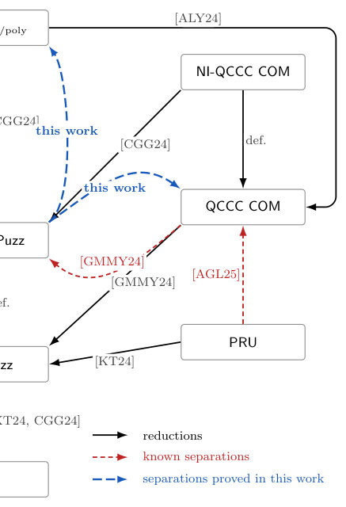
<figcaption class="paper-figure-caption"><b>Fig 1.</b> Figure 1: Known black-box reductions and oracle separations among QCCC primitives.</figcaption>
</figure>
</div>
<p><strong>Summary.</strong> This paper analyzes the limits of cryptographic security in a quantum setting where computation is quantum but communication is classical (QCCC). It proves that the classical equivalence of cryptographic tools breaks down by constructing oracle worlds where certain primitives, like one-way functions, cannot be simulated from others. The work develops advanced quantum information tools to establish these fundamental separations.</p>
<p><strong>Why it may be interesting.</strong> The techniques developed, such as the concentration theorems and the generalization of classical inequalities (Efron-Stein) to quantum states, are highly relevant for analyzing information flow and security in quantum communication protocols.</p>
<details>
<summary>Detailed structure</summary>
<p><strong>Main problem.</strong> The paper investigates whether the classical equivalence of fundamental cryptographic primitives (Minicrypt) holds when computation is restricted to the Quantum-Computation Classical-Communication (QCCC) model.</p>
<p><strong>Main result.</strong> The classical Minicrypt landscape breaks down in the QCCC model, demonstrated by oracle separations showing that primitives like one-way functions and bit commitments do not have fully black-box counterparts.</p>
<p><strong>Method.</strong> The authors construct specific oracle worlds and employ advanced quantum information techniques, including concentration theorems and the Hilbert-valued Efron–Stein inequality, to prove these separations.</p>
<p><strong>Model / system.</strong> The core model is the QCCC setting, where quantum local computation is possible, but communication is restricted to classical messages. The analysis revolves around cryptographic primitives like One-Way Puzzles (EV-OWPuzz) and commitment schemes.</p>
<p><strong>Key observables.</strong> The primary observables are the existence or non-existence of specific cryptographic primitives (e.g., OWFs, bit commitments) relative to the oracle structure.</p>
<p><strong>Important parameters / regimes.</strong> The analysis depends on the complexity of the oracle access (unitary oracle model) and the parameters governing the security reduction, such as the error bounds $\epsilon$ and $\delta$.</p>
<p><strong>Assumptions / limitations.</strong> The results are shown to hold in the unitary-oracle access model, and some constructions rely on the assumption that the puzzle distribution is $\epsilon$-close to uniform.</p>
<p><strong>Figures summary.</strong> Figure 1 provides an intuitive visualization of known black-box reductions and oracle separations among QCCC primitives.</p>
<p><strong>Paper structure.</strong> The paper proceeds by first establishing the general problem in the QCCC model, then developing tools like the Hilbert-valued Efron–Stein inequality, and finally applying these tools to construct separations proving the breakdown of classical cryptographic equivalences.</p>
</details>
<details>
<summary>Abstract</summary>
<p>Classically, it is well-known that several fundamental cryptographic primitives, including one-way functions, pseudorandom number generators, commitments, and signatures, characterize the same cryptographic world, which is known as "Minicrypt". In this paper, we investigate to what extent this picture persists in the quantum-computation classical-communication (QCCC) setting, where parties may perform quantum local computation, but communicate through only classical messages. We demonstrate that the classical Minicrypt landscape breaks down in the QCCC model by oracle separations. We construct two oracle worlds where efficiently verifiable one-way puzzles (EV-OWPuzz) exist. By a known equivalence, QCCC one-time signatures also exist in both worlds. In the first, one-way functions do not exist, even if we allow quantum pseudodeterministic evaluation. In the second, QCCC bit commitments do not exist. Thus, the classical Minicrypt reductions from signatures to one-way functions and bit commitments have no fully black-box counterparts in the QCCC setting. Our proofs develop techniques for analyzing the random phase states, including a concentration theorem and an LOCC decoupling theorem, which may be of independent interest.</p>
</details>
<p><sub><a href="#top">↑ back to top</a></sub></p>

<p><a id="paper-2609.34119"></a></p>
<h3 id="the-equivalence-of-topological-indices-for-math2007math-symmetric-quantum-spin-chains"><a href="http://arxiv.org/abs/2609.34119v1">The equivalence of topological indices for $\mathrm{U}(1)\rtimes\mathbb{Z}_2$-symmetric quantum spin chains</a></h3>
<p><strong>Authors:</strong> Hal Tasaki<br>
<strong>Type:</strong> theory · <strong>Category:</strong> other · <strong>PDF:</strong> <a href="https://arxiv.org/pdf/2609.34119v1">https://arxiv.org/pdf/2609.34119v1</a><br>
<strong>Analysis basis:</strong> full PDF text, analyzed in chunks</p>
<div class="figure-strip-hint">↔ Scroll figures horizontally</div>
<div class="paper-figures-scroll">
<figure class="paper-figure-card">
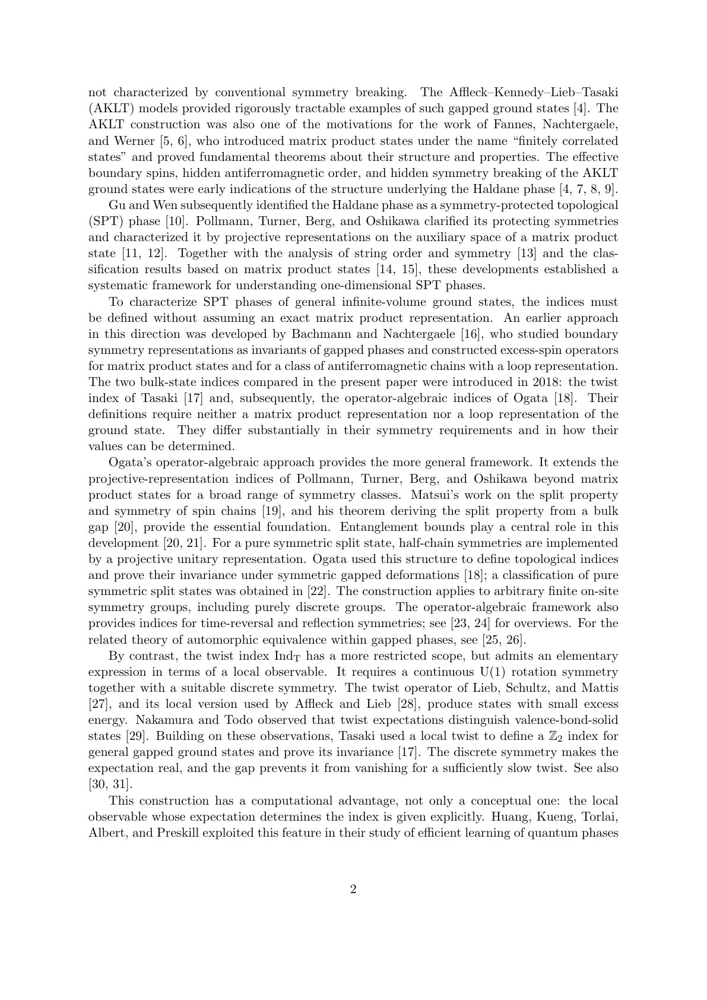
<figcaption class="paper-figure-caption"><b>Fig 1.</b> Low-resolution page preview, page 2</figcaption>
</figure>
<figure class="paper-figure-card">
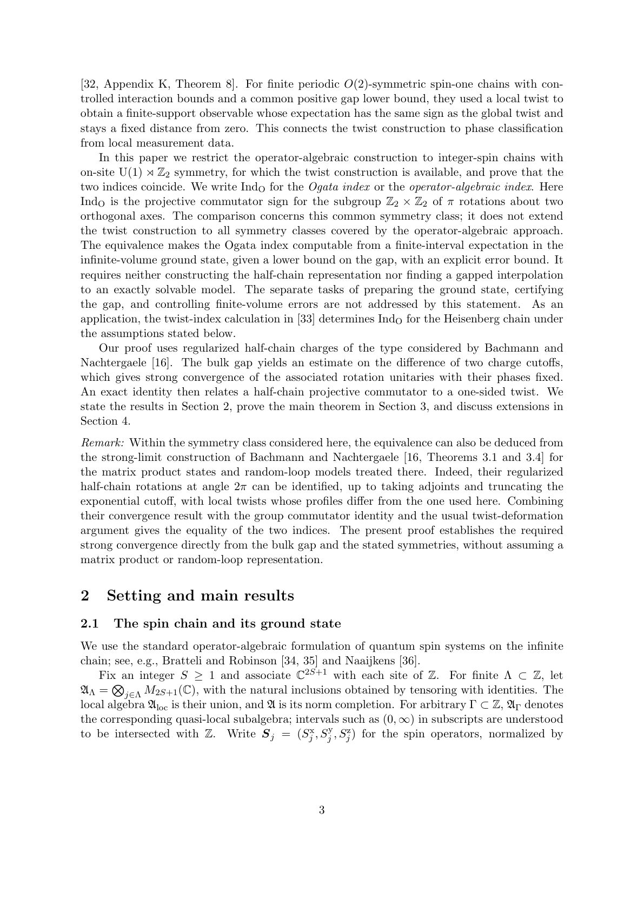
<figcaption class="paper-figure-caption"><b>Fig 2.</b> Low-resolution page preview, page 3</figcaption>
</figure>
<figure class="paper-figure-card">
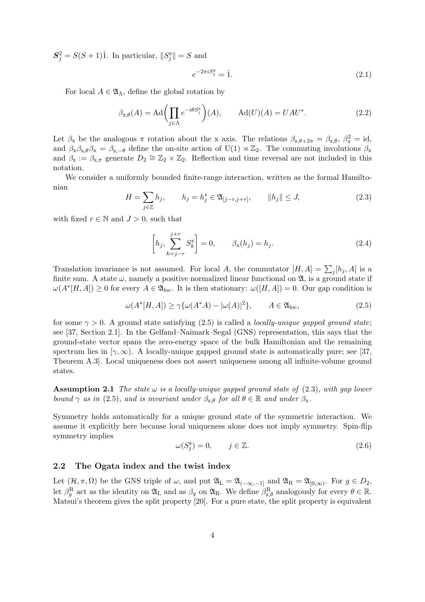
<figcaption class="paper-figure-caption"><b>Fig 3.</b> Low-resolution page preview, page 4</figcaption>
</figure>
<figure class="paper-figure-card">
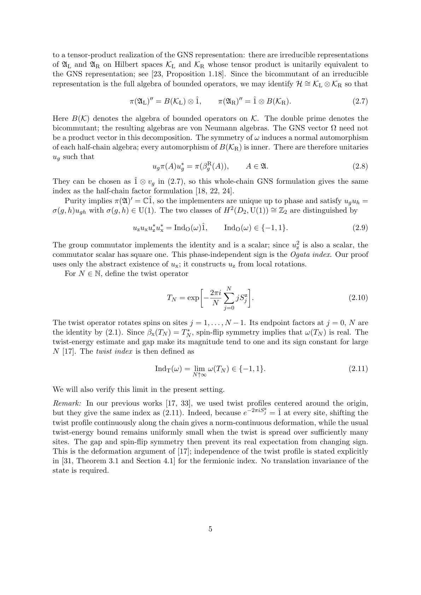
<figcaption class="paper-figure-caption"><b>Fig 4.</b> Low-resolution page preview, page 5</figcaption>
</figure>
<figure class="paper-figure-card">
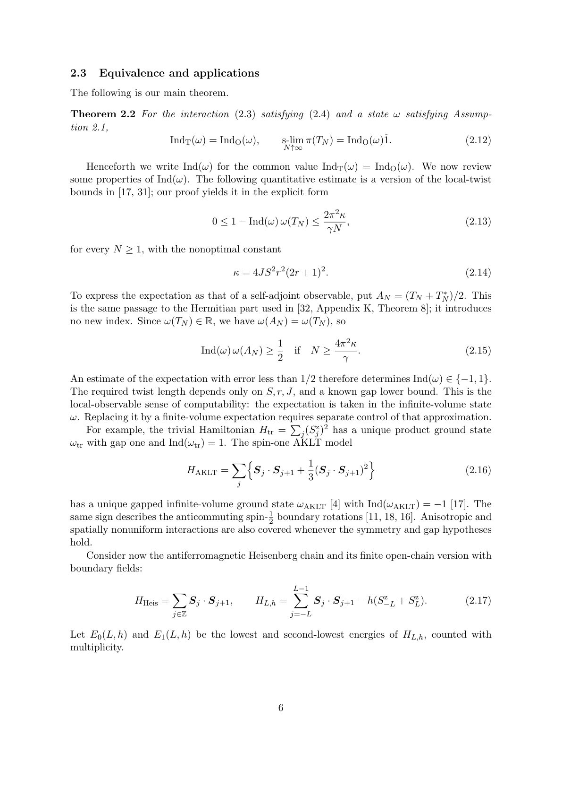
<figcaption class="paper-figure-caption"><b>Fig 5.</b> Low-resolution page preview, page 6</figcaption>
</figure>
</div>
<p><strong>Summary.</strong> This paper proves the equivalence of two topological indices, the Ogata index and the twist index, for quantum spin chains with $\mathrm{U}(1)
times\mathbb{Z}_2$ symmetry. Using advanced techniques from operator algebras and strong convergence estimates, the authors derive a computable formula for this index. This is significant because it provides a robust mathematical framework for characterizing topological order in strongly correlated quantum materials.</p>
<p><strong>Why it may be interesting.</strong> This work provides a powerful, mathematically rigorous tool to characterize topological order in 1D quantum magnets, extending index theory beyond simple symmetry constraints and offering concrete, computable methods for determining topological invariants.</p>
<details>
<summary>Detailed structure</summary>
<p><strong>Main problem.</strong> The paper aims to rigorously prove the mathematical equivalence between two distinct topological indices—Ogata's operator-algebraic index ($  ext{IndO}$) and the elementary twist index ($   ext{IndT}$)—for quantum spin chains.</p>
<p><strong>Main result.</strong> The equivalence $  ext{IndO} =     ext{IndT}$ is proven for $\mathrm{U}(1)
times\mathbb{Z}_2$-symmetric integer-spin chains, providing a computable formula for the topological invariant.</p>
<p><strong>Method.</strong> The proof combines techniques from operator algebras, utilizing a charge-fluctuation estimate to establish strong convergence of half-chain rotations, which is then linked to the Ogata index via an exact group commutator identity.</p>
<p><strong>Model / system.</strong> The study focuses on quantum spin chains defined on the infinite lattice ($\mathbb{Z}$) with Hamiltonians possessing $\mathrm{U}(1)
times\mathbb{Z}_2$ symmetry. The analysis is performed in the ground state ($\omega$) of such a system, assuming it is gapped and locally unique.</p>
<p><strong>Key observables.</strong> Topological indices ($ ext{IndO}$, $   ext{IndT}$), local twist expectations ($\omega(T_N)$), and the gap lower bound ($\gamma$).</p>
<p><strong>Important parameters / regimes.</strong> The symmetry group $\mathrm{U}(1)
times\mathbb{Z}_2$, the integer spin value $S$, and the gap $\gamma > 0$.</p>
<p><strong>Assumptions / limitations.</strong> The existence of a locally-unique gapped ground state ($\omega$) and the specific $\mathrm{U}(1)
times\mathbb{Z}_2$ symmetry structure are crucial assumptions.</p>
<p><strong>Paper structure.</strong> The paper establishes the context by defining both indices, then develops the proof by first using charge-fluctuation estimates to prove the strong convergence of half-chain rotations. Finally, an exact group commutator identity is used to equate the two definitions, leading to a computable formula and an application to the Heisenberg chain.</p>
</details>
<details>
<summary>Abstract</summary>
<p>Symmetry-protected topological (SPT) phases in quantum spin chains are distinguished by topological indices. Ogata's operator-algebraic indices apply to a broad range of symmetry classes without requiring continuous symmetry, whereas the elementary twist index of Tasaki requires $\mathrm{U}(1)$ symmetry. We prove their equivalence in the common setting of integer-spin chains with on-site $\mathrm{U}(1)\rtimes\mathbb{Z}_2$ symmetry and a symmetric locally-unique gapped ground state, without assuming translation invariance or a matrix product representation. A charge-fluctuation estimate yields a strong-limit construction of half-chain rotations with their phases fixed. An exact group commutator identity then identifies the Ogata index with the limit of local twist expectations and gives an explicit error bound. This provides a computable formula when a lower bound on the gap and the relevant ground-state expectations are available. As an application, a previous twist-index calculation determines the Ogata index to be $(-1)^S$ for the antiferromagnetic Heisenberg chain under explicit uniqueness and boundary-field gap assumptions.   The author formulated the problem and proposed the basic strategy, while ChatGPT made substantial contributions to the development of the proof.</p>
</details>
<p><sub><a href="#top">↑ back to top</a></sub></p>

<p><a id="paper-2609.35131"></a></p>
<h3 id="the-overlap-gap-property-separating-quantum-and-quantum-inspired-approximate-optimization-algorithms"><a href="http://arxiv.org/abs/2609.35131v1">The Overlap Gap Property: Separating Quantum and Quantum-Inspired Approximate Optimization Algorithms</a></h3>
<p><strong>Authors:</strong> Mark Goh, Thorge Müller<br>
<strong>Type:</strong> theory · <strong>Category:</strong> quantum information and computing · <strong>PDF:</strong> <a href="https://arxiv.org/pdf/2609.35131v1">https://arxiv.org/pdf/2609.35131v1</a><br>
<strong>Analysis basis:</strong> full PDF text, analyzed in chunks</p>
<div class="figure-strip-hint">↔ Scroll figures horizontally</div>
<div class="paper-figures-scroll">
<figure class="paper-figure-card">
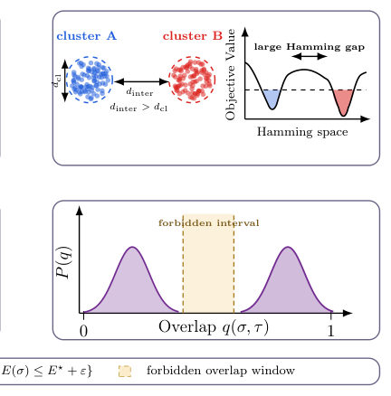
<figcaption class="paper-figure-caption"><b>Fig 1.</b> Figure 1: Schematic illustration of the overlap gap property (OGP). Top row: Geometry of the near-optimal solution space Sε = {σ : E(σ) ≤E⋆+ ε}, where σ is a spin configuration, E(σ) is its objective value or energy, E⋆is the optimal ground-state energy, and ε sets the allowed energy tolerance above the optimum. Without OGP (left), the solution space forms a connected low-energy region in configuration (Hamming) space, where the inter-cluster distance is smaller than the cluster diameter (dinter &lt; dcl). Consequently, local modifications of a con- figuration can continuously connect nearby near-optimal solutions. In the OGP regime (right), the near-optimal solution space fragments into...</figcaption>
</figure>
<figure class="paper-figure-card">
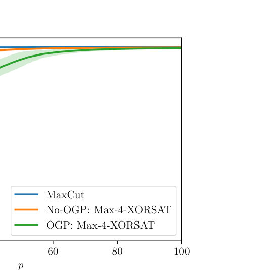
<figcaption class="paper-figure-caption"><b>Fig 2.</b> Figure 2: Mean QAOA approximation ratio Fp as a function of depth p and N = 15. The blue curve corresponds to MaxCut instances. The orange curve represents Max-4-XORSAT instances without OGP barrier. The green curve shows Max-4-XORSAT instances exhibiting an OGP.</figcaption>
</figure>
<figure class="paper-figure-card">
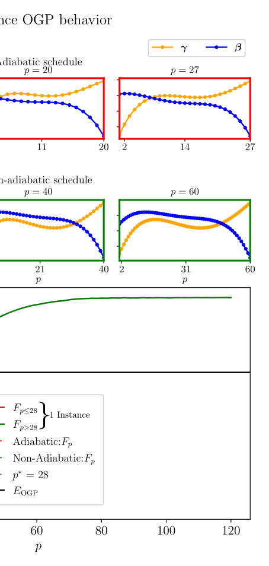
<figcaption class="paper-figure-caption"><b>Fig 3.</b> Figure 3: QAOA approximation ratio Fp as a function of circuit depth p for a sin- gle N=15 Max-4-XORSAT instance exhibiting a transition near the critical depth p∗= 28 (gray dashed line). The red curve (Fp≤28) corresponds to optimization trajectories obtained from an approximately adiabatic parameter schedule (first row, red frames), while the green curve (Fp&gt;28) corresponds to a non-adiabatic parameter branch (second row, green frames) emerging beyond the critical depth. Red and green markers indicate the achieved approximation ratios when the re- spective adiabatic and non-adiabatic schedules are explicitly followed, rather than fully re-optimized at each depth. The inset panels show the...</figcaption>
</figure>
<figure class="paper-figure-card">
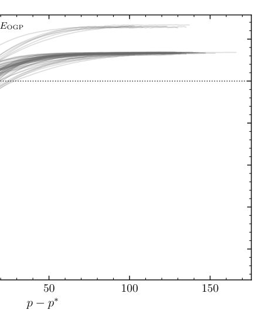
<figcaption class="paper-figure-caption"><b>Fig 4.</b> Figure 4: The data as shown in Fig. 12 after translating every Fp of each instance according to p−p∗and Fp−EOGP. The vertical dashed line indicates the instance- dependent critical depth p∗, while the horizontal dotted line denotes the energy at OGP emergence.</figcaption>
</figure>
<figure class="paper-figure-card">
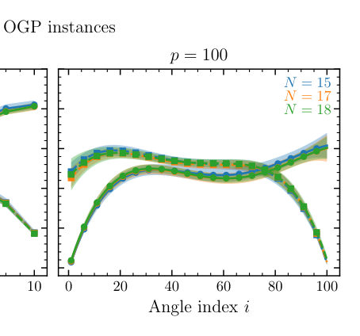
<figcaption class="paper-figure-caption"><b>Fig 5.</b> Figure 5: OGP instances: Average optimized QAOA parameter schedules ob- tained using the Fourier parameterization of Ref. [14]. Solid and dashed curves denote the averaged phase-separation angles γ∗ i and mixer angles β∗ i , respectively, while different colours correspond to different system sizes N.</figcaption>
</figure>
</div>
<p><strong>Summary.</strong> This paper proves that the classical mean-field approximation of QAOA (MF-AOA) fails for problems exhibiting the Overlap Gap Property (OGP). By simulating QAOA on such instances, the authors argue that QAOA can potentially surpass this algorithmic barrier, suggesting a super-polynomial advantage over classical methods, while also identifying a critical transition point in the optimal parameter schedule.</p>
<p><strong>Why it may be interesting.</strong> It provides a rigorous theoretical framework for understanding when quantum algorithms might offer a genuine advantage over their classical, mean-field approximations, particularly in the presence of structural barriers like the OGP.</p>
<details>
<summary>Detailed structure</summary>
<p><strong>Main problem.</strong> To prove that the Mean-Field Approximate Optimization Algorithm (MF-AOA), a quantum-inspired classical algorithm derived from QAOA, cannot find near-optimal solutions for problems exhibiting the Overlap Gap Property (OGP).</p>
<p><strong>Main result.</strong> The paper shows that while QAOA might surpass the OGP barrier, MF-AOA is fundamentally limited by it, and the advantage of QAOA over classical/mean-field approaches is suggested to be super-polynomial in depth.</p>
<p><strong>Method.</strong> The authors relate MF-AOA to finite-memory Approximate Message Passing (AMP) algorithms and use numerical simulations and finite-size scaling analysis on Max-4-XORSAT instances.</p>
<p><strong>Model / system.</strong> The study focuses on combinatorial optimization problems, specifically Max-q-XORSAT, analyzed through the lens of QAOA and its classical mean-field approximation (MF-AOA). The OGP is a topological property characterizing the difficulty of finding near-optimal solutions.</p>
<p><strong>Key observables.</strong> Approximation ratio ($F_p$), overlap distribution $P(q)$, and the required circuit depth ($p$) to overcome the OGP barrier.</p>
<p><strong>Important parameters / regimes.</strong> The Overlap Gap Property (OGP) itself, the depth $p$, and the comparison between adiabatic and non-adiabatic parameter schedules.</p>
<p><strong>Assumptions / limitations.</strong> The analysis relies on relating MF-AOA to AMP algorithms and assumes the existence of the OGP for certain problem classes.</p>
<p><strong>Figures summary.</strong> Figures illustrate the geometric manifestation of OGP (disconnected solution space) and show the performance separation between QAOA on OGP vs. non-OGP instances, along with the identification of a non-differentiable point in QAOA performance.</p>
<p><strong>Paper structure.</strong> The paper first establishes the theoretical limitation of MF-AOA due to OGP by linking it to AMP algorithms. It then uses numerical simulations on Max-4-XORSAT to demonstrate QAOA's potential advantage, including analyzing the transition between adiabatic and non-adiabatic parameter regimes near the OGP barrier.</p>
</details>
<details>
<summary>Abstract</summary>
<p>In this paper, we prove that the Mean-Field Approximate Optimization Algorithm (MF-AOA), a quantum-inspired classical algorithm of the Quantum Approximate Optimization Algorithm (QAOA), is unable to give arbitrary near optimal solution for problems exhibiting the Overlap Gap Property (OGP). We show this by relating the MF-AOA to finite-memory Approximate Message Passing (AMP) algorithms, which are known to be limited in performance by the OGP. Thus, our paper argues that problems exhibiting the OGP are one such instance where the QAOA can outperform the MF-AOA and AMP algorithms in general. We supplement this by numerically simulating the performance of the QAOA on instances of Max-$4$-XORSAT that exhibit the OGP and find that the QAOA is able to surpass the barrier, while our finite-size scaling analysis favors a super-polynomial over a polynomial depth dependence. In addition, we observe a non-differentiable point in the performance of the QAOA near by the OGP barrier, where the optimal QAOA parameters change from an adiabatic to a non-adiabatic schedule.</p>
</details>
<p><sub><a href="#top">↑ back to top</a></sub></p>

<p><a id="paper-2609.35656"></a></p>
<h3 id="the-power-of-oracle-access-optimal-sample-and-query-complexity-of-the-abelian-state-hidden-subgroup-problem"><a href="http://arxiv.org/abs/2609.35656v1">The power of oracle access: Optimal sample and query complexity of the abelian state hidden subgroup problem</a></h3>
<p><strong>Authors:</strong> Yuhan Liu, Jose Carrasco, Jens Eisert, Armando Bellante<br>
<strong>Type:</strong> theory · <strong>Category:</strong> quantum information and computing · <strong>PDF:</strong> <a href="https://arxiv.org/pdf/2609.35656v1">https://arxiv.org/pdf/2609.35656v1</a><br>
<strong>Analysis basis:</strong> full PDF text, analyzed in chunks</p>
<div class="figure-strip-hint">↔ Scroll figures horizontally</div>
<div class="paper-figures-scroll">
<figure class="paper-figure-card">
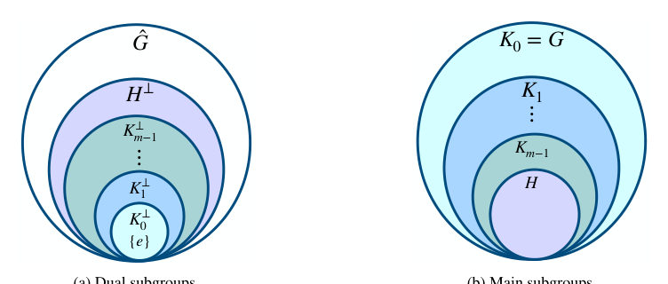
<figcaption class="paper-figure-caption"><b>Fig 1.</b> Figure 1: High-level picture of the Fourier sampling strategy. Fourier sampling enables sampling elements of the dual group H⊥. At the beginning, before the first sample, one assumes that H⊥is just the identity {e}, and that the hidden subgroup is the whole group G. Every successive span-increasing sample updates our beliefs by increasing the size of the current dual K⊥and reducing the size of the current main K. Eventually, the samples collectively span the whole dual H⊥and exactly pinpoint H. The figure shows the evolution of the beliefs throughout the algorithm, highlighting corresponding dual and main subgroups with matching colors.</figcaption>
</figure>
<figure class="paper-figure-card">
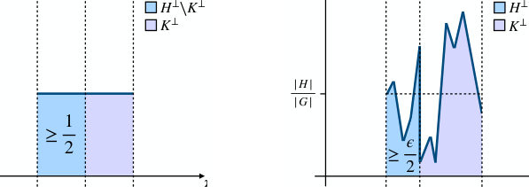
<figcaption class="paper-figure-caption"><b>Fig 2.</b> Figure 2: This figure illustrates how the probability distribution P(λ) over the dual subgroup’s elements λ (26) changes from abelian HSP (ε = 1) to abelian State HSP (ε ∈(0, 1]). (d) give a visual interpretation of StateHSP’s anticoncentration Theorem 3.7. Here, K⊥&lt; H⊥could be any proper subgroup of H⊥. The colored area under the curve represents the cumulative probability over the underlying set; i.e., P(H⊥) = P</figcaption>
</figure>
<figure class="paper-figure-card">
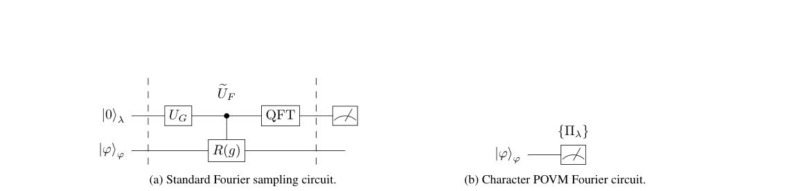
<figcaption class="paper-figure-caption"><b>Fig 3.</b> Figure 3: Two implementations of weak Fourier sampling. The circuit eUF in (a) uses a single copy of the input state to prepare |φF ⟩= P</figcaption>
</figure>
<figure class="paper-figure-card">
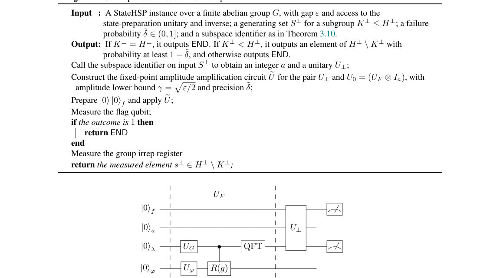
<figcaption class="paper-figure-caption"><b>Fig 4.</b> Figure 4: Circuit schematic for the amplification-based HSP-sampler. The block UF prepares the Fourier sampling state |φF ⟩= P λ∈H⊥ p</figcaption>
</figure>
<figure class="paper-figure-card">
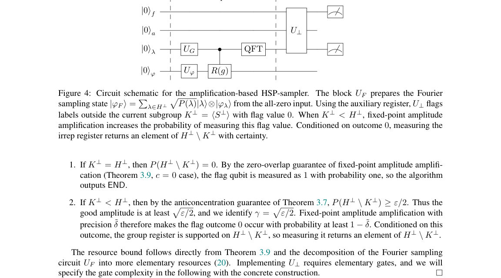
<figcaption class="paper-figure-caption"><b>Fig 5.</b> Figure 4 summarizes the circuit underlying our amplification-based HSP-sampler. We present two subspace identification strategies. The first uses a system of linear equations to implement a membership test for ⟨S⊥⟩and flag labels in H⊥\ K⊥; we develop this method in the next subsection. The second exploits a direct-sum decomposition H⊥= K⊥⊕Q to restrict the irrep register to labels in Q, with the 0 label treated separately. This approach is closer to the classical membership tests discussed in Section 2.2, and we describe it in Section D.</figcaption>
</figure>
</div>
<p><strong>Summary.</strong> This work determines the optimal resource scaling for solving the abelian State Hidden Subgroup Problem (StateHSP). It proves that accessing the state-preparation unitary coherently (the query model) yields a quadratic speedup in complexity compared to using independent copies (the sample model). This demonstrates that the ability to coherently reverse the state preparation is key to achieving the best quantum algorithmic performance.</p>
<p><strong>Why it may be interesting.</strong> The explicit comparison between sample and query complexity highlights the crucial role of coherent control over quantum resources, a fundamental concept in quantum algorithm design.</p>
<details>
<summary>Detailed structure</summary>
<p><strong>Main problem.</strong> The paper characterizes the optimal sample and query complexity for solving the abelian State Hidden Subgroup Problem (StateHSP).</p>
<p><strong>Main result.</strong> It establishes a quadratic separation in complexity: $O(\log(|G/H|)/\sqrt{\epsilon})$ queries are sufficient in the query model, compared to $O(\log(|G/H|)/\epsilon)$ copies in the sample model.</p>
<p><strong>Method.</strong> The analysis compares two input access models (independent copies vs. unitary access) and uses techniques involving amplitude amplification and algebraic structure theorems (like Howell normal form) to derive both upper and lower bounds.</p>
<p><strong>Model / system.</strong> The problem is defined on finite abelian groups $G$, where the goal is to find a hidden subgroup $H$ characterizing the symmetries of an unknown quantum state $|\varphi
angle$.</p>
<p><strong>Key observables.</strong> The success probability of identifying the hidden subgroup, and the required number of queries/samples ($\epsilon$ dependence).</p>
<p><strong>Important parameters / regimes.</strong> The promise gap parameter $\epsilon$, and the size of the quotient group $|G/H|$.</p>
<p><strong>Assumptions / limitations.</strong> The analysis is restricted to abelian groups, and the query model assumes coherent access to the state-preparation unitary $U_\varphi$ and its inverse.</p>
<p><strong>Figures summary.</strong> Not specified, but the notes mention Figure 6 illustrating the subspace identifier circuit for the binary case.</p>
<p><strong>Paper structure.</strong> The paper systematically analyzes the StateHSP under different input access models (sample vs. query) to determine the optimal resource scaling, culminating in the demonstration that coherent access provides a quadratic speedup.</p>
</details>
<details>
<summary>Abstract</summary>
<p>In the quest to identify further quantum algorithms exhibiting superpolynomial speed-ups, a recurring theme is that the complexity of a problem is largely shaped by the input access model. Here, we study this phenomenon for the state hidden subgroup problem (StateHSP), a quantum generalization of the hidden subgroup problem in which the goal is to identify the symmetries of an unknown quantum state. For finite abelian groups, existing Fourier-sampling algorithms use $O(\log(|G|)/ε)$ copies of the state, but whether this scaling is optimal has remained open. We settle the complexity of the abelian StateHSP in both the previously studied sample model and a new query model, which is a stronger and operationally natural generalization that provides access to the state-preparation unitary and its inverse. In the query model, we give a time-efficient quantum algorithm using $O(\log(|G/H|)/\sqrtε)$ forward and inverse queries, and prove a matching $Ω(\log(|G/H|)/\sqrtε)$ lower bound which holds even in the stronger conjugate-query and controlled-query settings. By contrast, we show that in the sample model, $Θ(\log(|G/H|)/ε)$ copies are both sufficient and information-theoretically necessary, even if one allows for arbitrary collective measurements. Thus, the quadratic improvement in $ε$ genuinely arises from coherent access to the preparation circuit. As applications, we obtain faster algorithms for learning stabilizer groups, locating unentanglement, and identifying hidden translation symmetries.</p>
</details>
<p><sub><a href="#top">↑ back to top</a></sub></p>

<p><a id="paper-2609.32979"></a></p>
<h3 id="toroidal-core-certificates-for-ppt-squared-diagonal-orthogonal-covariant-channels"><a href="http://arxiv.org/abs/2609.32979v1">Toroidal-Core Certificates for PPT-Squared Diagonal Orthogonal Covariant Channels</a></h3>
<p><strong>Authors:</strong> Samuel Marquez Gonzalez<br>
<strong>Type:</strong> theory · <strong>Category:</strong> quantum information and computing · <strong>PDF:</strong> <a href="https://arxiv.org/pdf/2609.32979v1">https://arxiv.org/pdf/2609.32979v1</a><br>
<strong>Analysis basis:</strong> full PDF text, analyzed in chunks</p>
<div class="figure-strip-hint">↔ Scroll figures horizontally</div>
<div class="paper-figures-scroll">
<figure class="paper-figure-card">
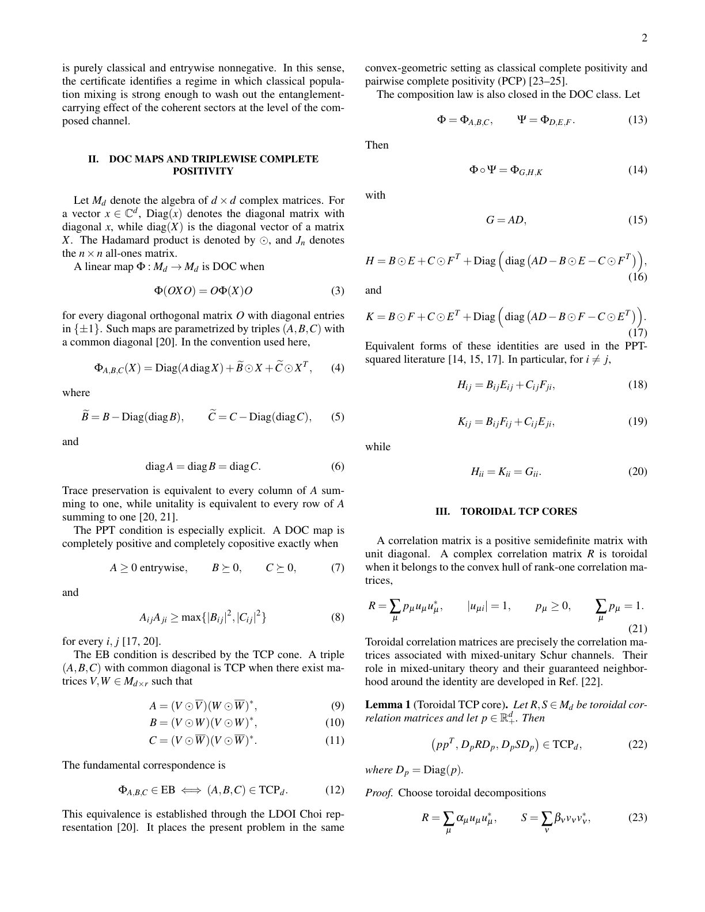
<figcaption class="paper-figure-caption"><b>Fig 1.</b> Low-resolution page preview, page 2</figcaption>
</figure>
<figure class="paper-figure-card">
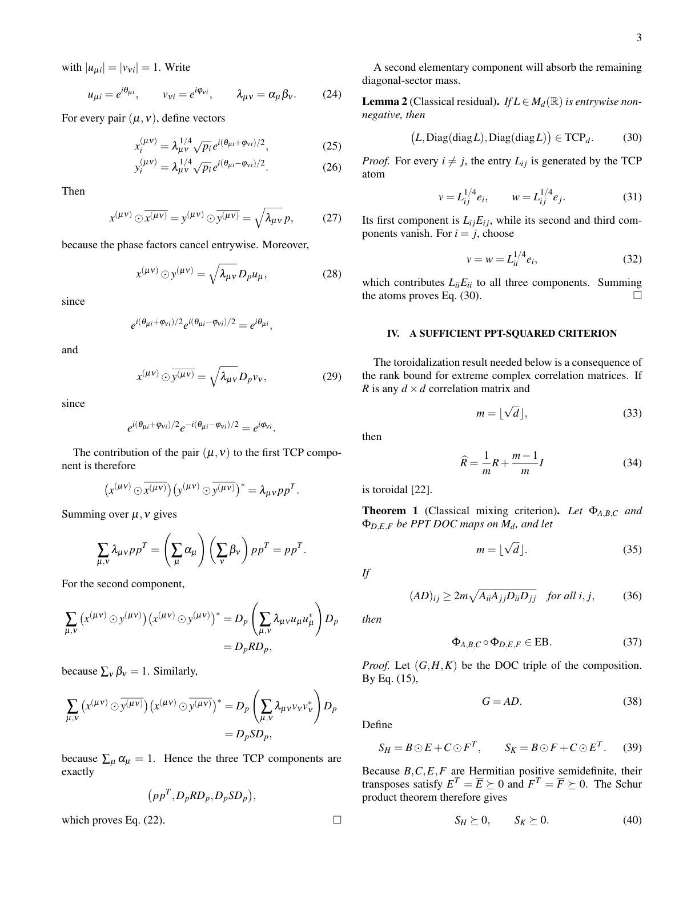
<figcaption class="paper-figure-caption"><b>Fig 2.</b> Low-resolution page preview, page 3</figcaption>
</figure>
<figure class="paper-figure-card">
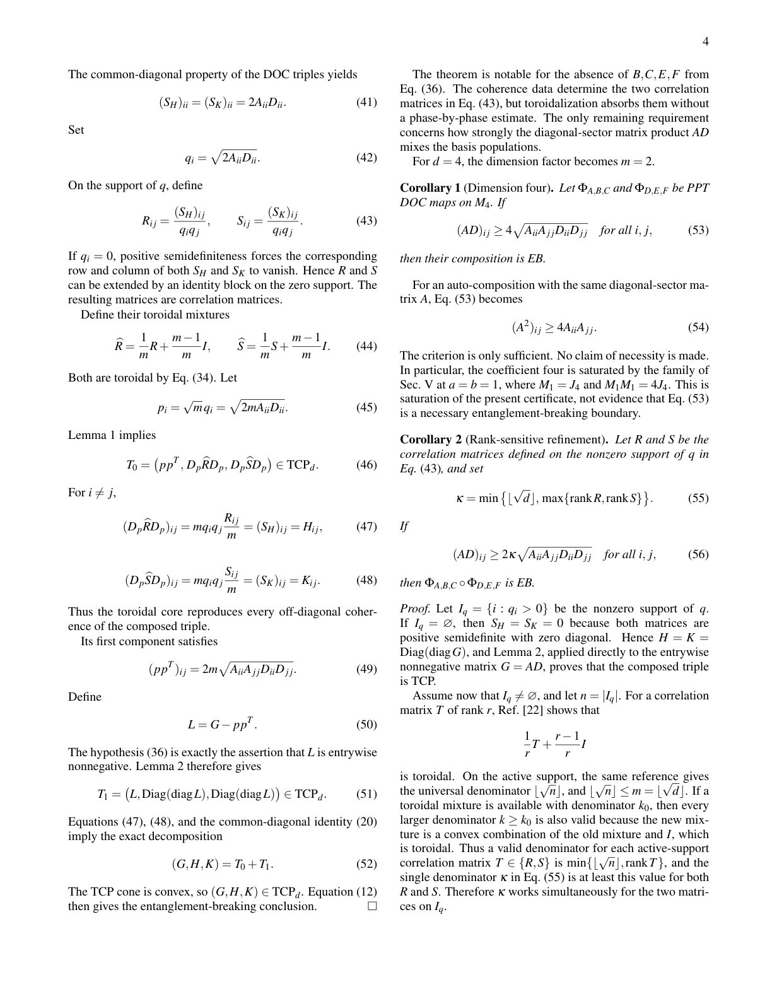
<figcaption class="paper-figure-caption"><b>Fig 3.</b> Low-resolution page preview, page 4</figcaption>
</figure>
<figure class="paper-figure-card">
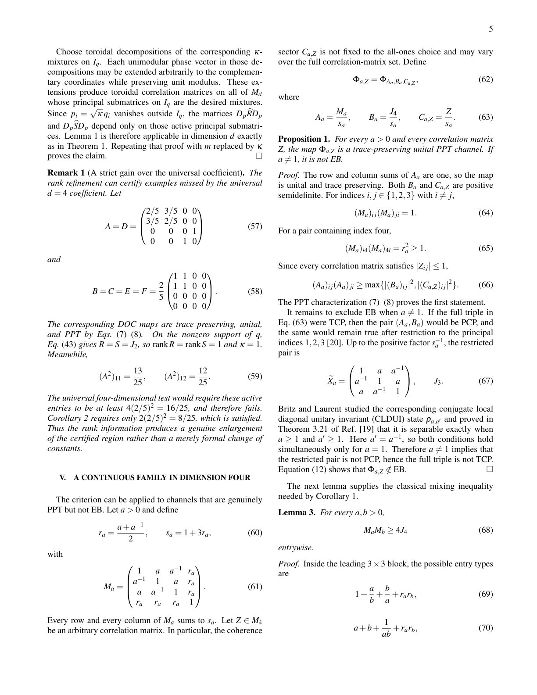
<figcaption class="paper-figure-caption"><b>Fig 4.</b> Low-resolution page preview, page 5</figcaption>
</figure>
<figure class="paper-figure-card">
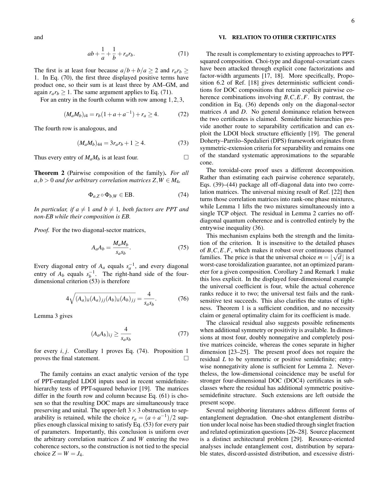
<figcaption class="paper-figure-caption"><b>Fig 5.</b> Low-resolution page preview, page 6</figcaption>
</figure>
</div>
<p><strong>Summary.</strong> This paper develops a sufficient mathematical criterion to determine when the composition of two specific types of quantum channels (PPT-squared DOC maps) must be entanglement-breaking. By analyzing the coherence structure using toroidal correlation matrices, the authors provide an explicit inequality that guarantees the EB property for these channels. This advances the understanding of entanglement preservation under sequential quantum operations.</p>
<p><strong>Why it may be interesting.</strong> This work provides a concrete, computable criterion for entanglement properties of quantum operations, which is fundamental to understanding quantum channel capacity and resource theories.</p>
<details>
<summary>Detailed structure</summary>
<p><strong>Main problem.</strong> The paper addresses the open Positive-Partial-Transpose-Squared (PPT-squared) conjecture, which asks if composing two PPT quantum channels must result in an Entanglement-Breaking (EB) channel.</p>
<p><strong>Main result.</strong> A sufficient condition for the composition of PPT-squared Diagonal Orthogonal Covariant (DOC) channels to be EB is derived, involving an entrywise bound on the product of diagonal-sector matrices.</p>
<p><strong>Method.</strong> The proof involves decomposing the composition into a toroidal core (related to coherence data) and a classical residual, leading to a concrete mathematical criterion.</p>
<p><strong>Model / system.</strong> The analysis focuses on quantum channels ($\Phi$) acting on $d 	imes d$ complex matrices ($M_d$), specifically restricted to the Diagonal Orthogonal Covariant (DOC) class.</p>
<p><strong>Key observables.</strong> The primary observables are the correlation matrices ($R, S$) derived from the off-diagonal elements of the composed channel, and the diagonal-sector matrices ($A, D$).</p>
<p><strong>Important parameters / regimes.</strong> The dimension $d$ is crucial, with specific results noted for $d=4$. The universal coefficient $\lfloor\sqrt{d}
floor$ appears in the sufficient condition.</p>
<p><strong>Assumptions / limitations.</strong> The derived criterion is explicitly stated to be a sufficient certificate, not a necessary characterization, and the analysis is restricted to the DOC class.</p>
<p><strong>Paper structure.</strong> The paper establishes the context of the PPT-squared conjecture, develops the mathematical machinery using toroidal cores and decomposition theorems, derives the sufficient condition, and concludes by constructing a continuous family of counterexamples/examples.</p>
</details>
<details>
<summary>Abstract</summary>
<p>The positive-partial-transpose-squared (PPT-squared) conjecture asks whether the composition of two positive-partial-transpose (PPT) quantum channels must be entanglement breaking (EB). The problem remains open in general and, within the diagonal orthogonal covariant (DOC) class, the first unresolved deterministic dimension is four. A sufficient condition for PPT-squared composition is derived for DOC maps in arbitrary finite dimension. The proof isolates the quantum coherence data into two correlation matrices, mixes each with the identity until it lies in the convex hull of rank-one correlation matrices, and converts the resulting objects into an explicit triplewise completely positive (TCP) core. The remaining contribution is purely classical and is TCP whenever a simple entrywise mixing inequality is satisfied. For PPT DOC maps $Φ_{A,B,C}$ and $Φ_{D,E,F}$ on $M_d$, the entrywise bound $(AD)_{ij}\ge 2\lfloor\sqrt{d}\rfloor\sqrt{A_{ii}A_{jj}D_{ii}D_{jj}}$ for all $i,j$ guarantees that $Φ_{A,B,C}\circΦ_{D,E,F}$ is EB. In dimension four the universal coefficient becomes four. A continuous family of bistochastic PPT channels is then constructed; every member with $a\ne1$ is not EB, while every pairwise composition within the family is proved to be EB. A rank-sensitive refinement shows explicitly how low coherence rank can improve the universal coefficient. The resulting certificate is sufficient rather than necessary and is complementary to factor-width and semidefinite-hierarchy approaches.</p>
</details>
<p><sub><a href="#top">↑ back to top</a></sub></p>

<p><a id="paper-2609.35004"></a></p>
<h3 id="unconventional-superconductivity-in-locally-non-centrosymmetric-cenimath2058mathasmath2059math"><a href="http://arxiv.org/abs/2609.35004v1">Unconventional superconductivity in locally non-centrosymmetric CeNi$_2$As$_2$</a></h3>
<p><strong>Authors:</strong> Félix Morineau, Jan Knapp, Javier Landaeta, Thomas Lühmann, Lea Richter, Petra Knappova, Soumen Ash, Sushma Lakshmi Ravi Sankar, Konstantin Semeniuk, Elena Hassinger, Christoph Geibel, Manuel Brando, Daniel F. Agterberg, Andrew P. Mackenzie, Seunghyun Khim<br>
<strong>Type:</strong> experiment · <strong>Category:</strong> strongly correlated electrons · <strong>PDF:</strong> <a href="https://arxiv.org/pdf/2609.35004v1">https://arxiv.org/pdf/2609.35004v1</a><br>
<strong>Analysis basis:</strong> full PDF text, analyzed in chunks</p>
<div class="figure-strip-hint">↔ Scroll figures horizontally</div>
<div class="paper-figures-scroll">
<figure class="paper-figure-card">
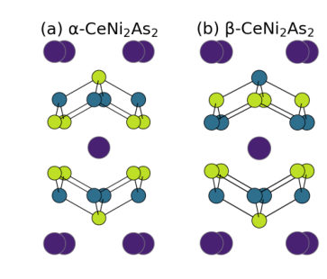
<figcaption class="paper-figure-caption"><b>Fig 1.</b> Fig. 1 Two isomorphic tetragonal structures of CeNi2As2. a, α-CeNi2As2 in the body- centered ThCr2Si2-type and b, β-CeNi2As2 in the primitive CaBe2Ge2-type structure. The major difference lies in the coordination of the constituting Ni-As layer that separates the Ce layer. α- CeNi2As2 has Ni coordinated at the tetrahedral site surrounded with As while in β-CeNi2As2 one of the Ni-As layers has a complete interchange of the Ni and As positions. c, Powder x-ray diffraction pattern on crushed single-crystalline sample agrees with the expected pattern (d) for β-CeNi2As2 but clearly departs from the one for α-CeNi2As2. Detailed crystal structures are presented in Extended Data Tables A2-A4.</figcaption>
</figure>
<figure class="paper-figure-card">
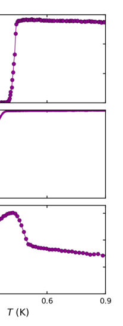
<figcaption class="paper-figure-caption"><b>Fig 2.</b> Fig. 2 Superconducting transition at 0.4 K in β-CeNi2As2. a, Temperature dependence of ab-plane (bulk) resistivity, b, ac-magnetic susceptibility, and c, heat capacity divided by temperature C/T. Sample#1, #2, and #3 are representative: similar observations were made on a total of four crystals (see Extended Data Fig.A3 and Fig.A4).</figcaption>
</figure>
<figure class="paper-figure-card">
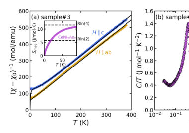
<figcaption class="paper-figure-caption"><b>Fig 3.</b> Fig. 3 Unusual normal state behaviors of the Kondo-lattice system β-CeNi2As2. a, Inverse magnetic susceptibility after subtracting the temperature-independent term χ0. The solid lines are fits to the experimental data given by the crystal electric field (CEF) analysis (Extended Table A1), which determines the first-excited doublet to be located 10 K above the ground state doublet. The inset shows magnetic entropy Smag(T) of β-CeNi2As2. b, C/T of β-CeNi2As2. No anomaly is seen at 4.8 K, confirming that the sample is free of any minority phase of α-CeNi2As2. Increasing C/T with decreasing temperature below 10 K demonstrates a non-Fermi liquid behavior. The phonon heat capacity of β-CeNi2As2...</figcaption>
</figure>
<figure class="paper-figure-card">
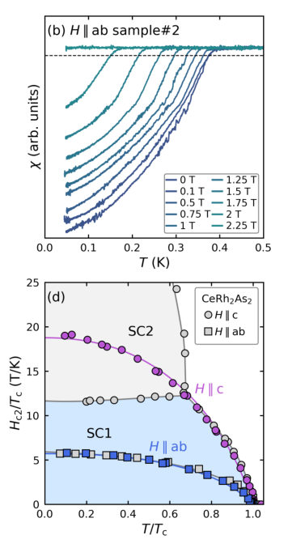
<figcaption class="paper-figure-caption"><b>Fig 4.</b> Fig. 4 Signature of Rashba superconductivity in β-CeNi2As2 a,b, Temperature-dependent magnetic susceptibility for various applied fields parallel to the c axis (H∥c) and ab plane (H∥ab), respectively. The dashed horizontal lines denote the criterion used to determine Tc at each field. c, The upper critical fields, Hc2, obtained from the magnetic susceptibility data. The solid lines are fits to the experimental data using a theoretical model for the SC1 phase of CeRh2As2 [12]. d, The normalized critical field, Hc2(T) divided by Tc (Hc2/Tc), as a function of reduced temperature T/Tc. The corresponding normalized critical field (gray symbols) for CeRh2As2 (H∥c and H∥ab ([110]) are drawn for...</figcaption>
</figure>
</div>
<p><strong>Summary.</strong> This work reports on superconductivity in $eta$-CeNi$_2$As$_2$, a heavy fermion material with local structural asymmetry. The key finding is that the superconducting condensation occurs from an incoherent normal state, suggesting unconventional pairing mechanisms. By comparing its superconducting properties and upper critical fields to related compounds, the authors deepen the understanding of how symmetry and electronic correlations dictate pairing symmetry in strongly correlated systems.</p>
<p><strong>Why it may be interesting.</strong> The investigation into superconductivity arising from an incoherent normal state, far from a Fermi liquid, challenges standard BCS theory and connects structural symmetry breaking (Rashba SOC) to pairing symmetry, which is a key area in strongly correlated electron physics.</p>
<details>
<summary>Detailed structure</summary>
<p><strong>Main problem.</strong> To find and understand heavy fermion superconductivity in materials exhibiting local inversion symmetry breaking, advancing the general understanding of unconventional superconductivity.</p>
<p><strong>Main result.</strong> Superconductivity was confirmed in $eta$-CeNi$_2$As$_2$ at $\approx 0.4$ K, which condenses from an incoherent normal state, raising profound questions about the pairing mechanism.</p>
<p><strong>Method.</strong> The study involved growing single crystals and performing comprehensive transport, thermodynamic (heat capacity), and magnetic susceptibility measurements under varying magnetic fields.</p>
<p><strong>Model / system.</strong> The research focuses on the $   ext{CaBe}<em 13>2 ext{Ge}_2$ isomorph of $    ext{CeNi}_2 ext{As}_2$, a heavy fermion superconductor with a locally non-centrosymmetric structure, comparing its behavior to $    ext{CeRh}_2 ext{As}_2$ and $    ext{UBe}</em>$.</p>
<p><strong>Key observables.</strong> Superconducting transition temperature ($T_c$), electronic heat capacity coefficient ($\gamma$), magnetic susceptibility ($\chi$), in-plane ($
ho_{ab}$) and c-axis ($
ho_c$) resistivity, and upper critical fields ($H_{c2}$).</p>
<p><strong>Important parameters / regimes.</strong> Effective magnetic moment ($\approx 2.54 \mu_B$), characteristic energy scales ($\Delta_{	ext{CEF},1} \approx 10$ K), and critical fields relative to the Pauli limit.</p>
<p><strong>Assumptions / limitations.</strong> The analysis assumes that the observed superconductivity is governed by the interplay between local non-centrosymmetry, heavy fermion behavior, and the nature of the normal state coherence.</p>
<p><strong>Figures summary.</strong> Figures compare superconducting transition signatures (resistivity, $\chi$, $C/T$) and show unusual normal state behaviors, while other figures detail $H_{c2}$ anisotropy and phase diagrams comparing $eta$-CeNi$_2$As$_2$ to CeRh$_2$As$_2$.</p>
<p><strong>Paper structure.</strong> The paper progresses from establishing the superconducting transition in the new material, characterizing the unusual normal state (incoherent/non-Fermi liquid), and finally probing the superconducting state using high-field measurements to constrain the pairing symmetry.</p>
</details>
<details>
<summary>Abstract</summary>
<p>Recent years have seen intense research on heavy fermion superconductivity, inspired by the discovery of multiple superconducting phases in UTe$_\text{2}$ and CeRh$_\text{2}$As$_\text{2}$. In the latter material, two superconducting phases observed under applied magnetic field oriented along the crystallographic $\textit{c}$ direction are associated with local inversion symmetry breaking. To advance understanding of these phenomena, it is highly desirable to find further examples of heavy fermion superconductivity in materials with locally non-centrosymmetric structure. We have succeeded in this quest, by growing single crystals of the CaBe$_\text{2}$Ge$_\text{2}$ isomorph of CeNi$_\text{2}$As$_\text{2}$. The resulting superconductivity brings more than we had foreseen. In addition to providing the opportunity to compare and contrast with that of CeRh$_\text{2}$As$_\text{2}$, the condensation occurs from an incoherent normal state quantitatively similar to that of UBe$_\text{13}$. Our findings therefore raise profound questions not just about superconductivity in the locally non-centrosymmetric structures, but about unconventional superconductivity itself.</p>
</details>
<p><sub><a href="#top">↑ back to top</a></sub></p>

<p><a id="paper-2609.35322"></a></p>
<h3 id="weighting-schedules-govern-what-and-when-score-based-generative-models-learn-from-multimodal-data"><a href="http://arxiv.org/abs/2609.35322v1">Weighting Schedules Govern What and When Score-Based Generative Models Learn from Multimodal Data</a></h3>
<p><strong>Authors:</strong> Jérémie Klinger, Raphaël Urfin, Giulio Biroli, Marylou Gabrié<br>
<strong>Type:</strong> theory · <strong>Category:</strong> disordered systems and neural networks · <strong>PDF:</strong> <a href="https://arxiv.org/pdf/2609.35322v1">https://arxiv.org/pdf/2609.35322v1</a><br>
<strong>Analysis basis:</strong> full PDF text, analyzed in chunks</p>
<div class="figure-strip-hint">↔ Scroll figures horizontally</div>
<div class="paper-figures-scroll">
<figure class="paper-figure-card">
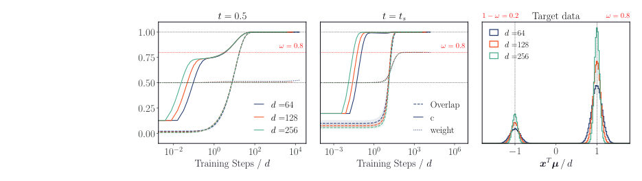
<figcaption class="paper-figure-caption"><b>Fig 1.</b> Figure 1: Exact score parametrization for (D1). Overlap m (dashed), skip connection c (solid) and mode weight (dotted), against training steps rescaled by d, for the unbalanced GMM at ω = 0.8, different values of d and two noising times, t = 0.5 (left) and t = ts (middle). Typical bimodal histograms of projected samples are shown on the (right) panel. In Regime II (left) c plateaus on O(1) times and m converges on O(d) times, while the weight stays frozen at its initial value 1/2. At speciation (right), c first reaches its final value and then weight and overlap rise together, on a shared O(d) timescale.</figcaption>
</figure>
<figure class="paper-figure-card">
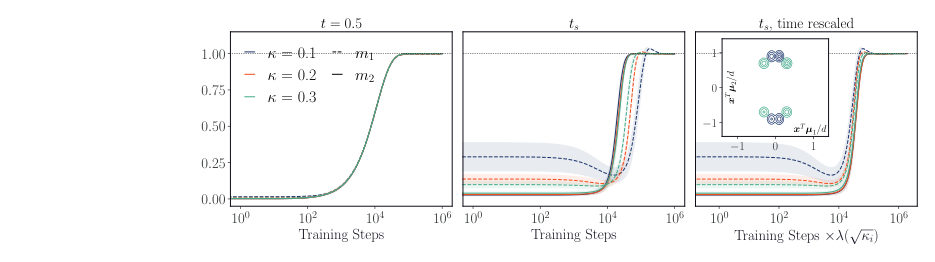
<figcaption class="paper-figure-caption"><b>Fig 2.</b> Figure 2: Exact score parametrization for (D2). Block overlaps m1 (dashed) and m2 (solid), against training steps, for the quadrimodal GMM at d = 1024, structure parameter κ ∈{0.1, 0.2, 0.3} and two noising times, t = 0.5 (left) and t = ts (middle and right). In Regime II (left) the two overlaps are learned on the same training timescale, independently of κ. At speciation (middle) they evolve on different timescales with µ1 being learned after µ2. Rescaling each block’s training time by its own closed-form rate λ(γi) of equation 13, with γ2 i = κiΛtΓt and κ1 = κ, κ2 = 1 −κ, collapses the curves (right). The inset shows (D2) samples, projected on (µ1, µ2). The smaller κ, the closer the modes...</figcaption>
</figure>
<figure class="paper-figure-card">
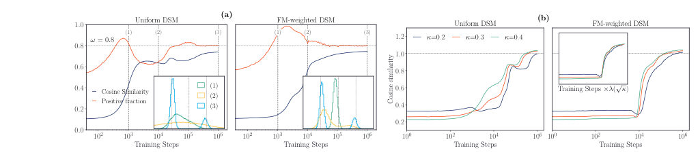
<figcaption class="paper-figure-caption"><b>Fig 3.</b> Figure 3: ResNet for GMMs at d = 64, under uniform DSM (left) and FM-weighted DSM (right) in each panel, against training steps. (a) (D1) at ω = 0.8: cosine similarity with µ (blue) and positive fraction of p = xT µ/∥µ∥2 (red); insets show the histogram of p at the three marked steps. (b) (D2): cosine similarity with µ1 for κ ∈{0.2, 0.3, 0.4}; the inset replots the FM curves against training steps rescaled by λ(√κ).</figcaption>
</figure>
<figure class="paper-figure-card">
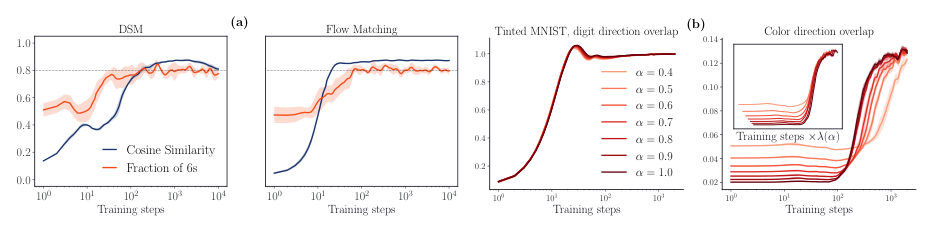
<figcaption class="paper-figure-caption"><b>Fig 4.</b> Figure 4: Experiments on MNIST. (a) Cosine similarity with the digit direction (blue) and fraction of 6s (orange), against training steps, for MNIST restricted to 3s and 6s, of which a fraction ω = 0.8 are 6s (dotted line), under DSM (left) and FM (right). Both objectives acquire direction and proportion within a single decade of training, MNIST offer- ing too short an SNR range for the two weightings to separate. (b) Overlap with the digit direction (left) and with the color direction (right), against training steps, for tinted MNIST trained with FM at tint intensities α, the dataset being built so that the squared amplitude of the color mode scales as α2. The digit direction is learned at...</figcaption>
</figure>
<figure class="paper-figure-card">
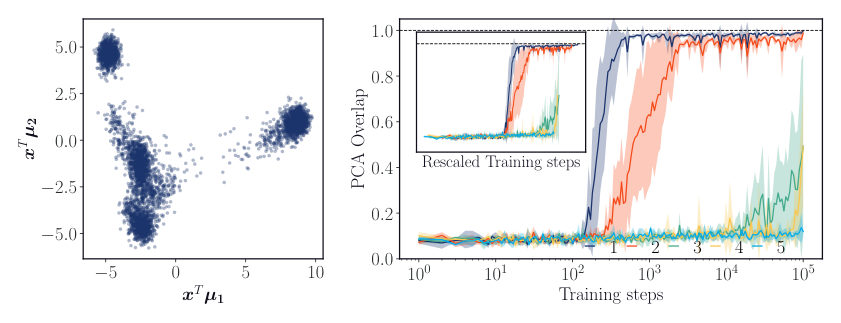
<figcaption class="paper-figure-caption"><b>Fig 5.</b> Figure 5: Sequential feature learning on HGD. (Left) HGD samples projected onto the first two PCA eigenvectors, showing a complex multimodal structure. (Right) Overlap of the generated samples with the leading PCA components µi, i = 1, . . . , 5, against training steps, under Masked Discrete Diffusion: the directions are recovered one after the other, and rescaling training time by the closed-form rate λ(√vi) of equation 13, with vi the variance explained along the i-th reference PCA direction, collapses the two leading ones (inset).</figcaption>
</figure>
</div>
<p><strong>Summary.</strong> This work provides a rigorous theoretical analysis of score-based generative models trained on multimodal data. It shows that the learning of different features—such as the relative weights between modes—is critically dependent on the training weighting schedule $w(t)$. Optimal learning of all features only occurs near a specific 'speciation time' where the signal-to-noise ratio is near unity.</p>
<p><strong>Why it may be interesting.</strong> It provides deep theoretical insights into the training stability and feature acquisition mechanisms of modern generative models, which are increasingly used to model complex physical data distributions.</p>
<details>
<summary>Detailed structure</summary>
<p><strong>Main problem.</strong> The paper investigates how the weighting schedule $w(t)$ in the training objective of score-based generative models dictates the learning dynamics of different features (mode directions and relative weights) when modeling multimodal data.</p>
<p><strong>Main result.</strong> Learning is highly dependent on the training regime: at high signal-to-noise ratios, only mode directions are learned together, while relative weights are only acquired near a critical 'speciation time' where $\Lambda(t) \sim 1$.</p>
<p><strong>Method.</strong> The authors use an exact high-dimensional analysis of the training dynamics for Gaussian Mixture Models, decomposing the integrated loss into single-time contributions.</p>
<p><strong>Model / system.</strong> The model is a score-based generative model trained to map Gaussian noise to a complex, multimodal target distribution, analyzed using the Stochastic Interpolant framework.</p>
<p><strong>Key observables.</strong> Mode directions, relative weights, and the Signal-to-Noise Ratio $\Lambda(t)$ across training time $t$.</p>
<p><strong>Important parameters / regimes.</strong> The weighting schedule $w(t)$ and the critical 'speciation time' $t_s$ where $\Lambda(t) \sim 1$.</p>
<p><strong>Assumptions / limitations.</strong> The analysis relies on an exact high-dimensional analysis of unbalanced and hierarchical Gaussian Mixture Models, assuming the score function is known or accurately modeled.</p>
<p><strong>Figures summary.</strong> Figures illustrate the evolution of learning timescales for different components (e.g., mode directions vs. weights) under varying noise regimes.</p>
<p><strong>Paper structure.</strong> The paper analyzes the training objective by decomposing the loss, deriving the dynamics for Gaussian Mixtures in different noise regimes ($\Lambda(t)$), and concluding that the effective weighting near the speciation time governs feature learnability.</p>
</details>
<details>
<summary>Abstract</summary>
<p>Score-based generative models generate new samples by integrating a time-dependent drift that carries Gaussian noise onto the target distribution. In practice this drift is modeled by a neural network, trained on a loss integrated over time $t$ with a weighting schedule $w(t)$. Along the backward dynamics, and for multi-modal distributions, trajectories commit to modes of the target within a narrow time window, the \textit{speciation time}. In this work, focusing on high-dimensional data, we decompose the integrated loss into its single-time contributions and analyze each at fixed signal-to-noise ratio $Λ(t)$: we show that $Λ(t)$ sets the rate at which each feature of a multimodal target - the mode directions and their relative weights - is acquired during training. Crucially, at high $Λ(t)$ all mode directions are acquired together, on a single timescale insensitive to their amplitudes, while the relative weights are not learned at all. Only near the speciation time, where $Λ(t)$ becomes of order one, do all features become learnable, each on its own timescale: the weights are acquired jointly with the directions, and the directions at rates set by their relative amplitudes. For models trained on time-integrated objectives, the learning dynamics is then governed by how much of the weighting effectively sits near the speciation time, which provides insights on $w(t)$ design choices. These results follow from an exact high-dimensional analysis of the training dynamics of unbalanced and hierarchical Gaussian mixtures. Numerical experiments on image and human genome haplotype generation recover the predicted hierarchy of learning timescales in more complex settings.</p>
</details>
<p><sub><a href="#top">↑ back to top</a></sub></p>
</details>
<h2 id="secondary-cond-mat-archives">Secondary cond-mat archives</h2>
<p><em>Papers from cond-mat.mtrl-sci, mes-hall, other, soft, supr-con. These archives are de-prioritized — they appear at the end regardless of relevance score.</em></p>
<h3 id="relevant-in-secondary-archives-31">Relevant in secondary archives (31)</h3>

<p><a id="paper-2609.35492"></a></p>
<h3 id="dynamical-transition-in-non-hermitian-chern-insulator"><a href="http://arxiv.org/abs/2609.35492v1">Dynamical transition in non-Hermitian Chern insulator</a></h3>
<p><strong>Authors:</strong> Zhi-Qiang Zhang, Yuan-Hang Ren, Ming Lu, Hua Jiang<br>
<strong>Type:</strong> theory · <strong>Category:</strong> other · <strong>PDF:</strong> <a href="https://arxiv.org/pdf/2609.35492v1">https://arxiv.org/pdf/2609.35492v1</a><br>
<strong>Analysis basis:</strong> full PDF text, analyzed in chunks
<strong>Topic relevance:</strong> 🔥 <code>driven-dissipative phase transition</code> <strong>4/5</strong> · <code>methods for driven-dissipative</code> <strong>3/5</strong> · <code>non-equilibrium universality</code> <strong>3/5</strong> · <code>analog quantum simulation</code> <strong>2/5</strong> · <code>Keldysh / 2PI / non-Gaussian methods</code> <strong>1/5</strong> · <code>correlated / nonlocal dissipation</code> <strong>1/5</strong> · <code>quantum measurements</code> <strong>1/5</strong></p>
<div class="figure-strip-hint">↔ Scroll figures horizontally</div>
<div class="paper-figures-scroll">
<figure class="paper-figure-card">
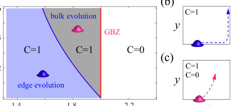
<figcaption class="paper-figure-caption"><b>Fig 1.</b> FIG. 1: (a) The phase diagram. The topologically trivial white region with Chern number C = 0 is separated with the topologically nontrivial gray and blue regions, by the red curve predicted by the GBZ theory. The solid blue curve delineates the distinct dynamical regimes marked in (b) and (c), where the wave packets evolve along the boundary in (b) , and spread into the bulk in (c).</figcaption>
</figure>
<figure class="paper-figure-card">
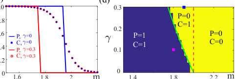
<figcaption class="paper-figure-caption"><b>Fig 2.</b> FIG. 2: (a) and (b) are the time evolutions of wave packet |ψ(r, t)| with boundary and bulk type evolutions, respectively. Note that they are both in the topological region, as marked in (d) with red and blue squares. (c) The variation of P and Chern number C for two representative γ’s, showing clear deviation for non-Hermitian case. (d) The plot of P and C versus m and γ with system size Nx = Ny = 30. The red dashed line is the topological phase transition line based on the GBZ theory. The solid green line represents the dynamical transition line given by Eq. (19). The parameters are v = tx = ty = 1 and γx = γy = γ, with others marked in the figure accordingly.</figcaption>
</figure>
<figure class="paper-figure-card">
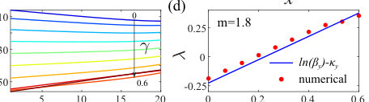
<figcaption class="paper-figure-caption"><b>Fig 3.</b> FIG. 3: (a) A schematic illustrating the method for obtain- ing the topological edge states of H, using the transformed Hermitian Hamiltonian H = S−1HS and its eigenfunction φH as the intermediate step. (b) A typical plot of the edge state with γ = 0.1 and m = 1.8. (c) The variation of the bottom edge states along the white dashed line marked in (b) for γ ∈[0, 0.6]. (d) The red dots are the slope of the edge states in (c), and the blue solid line is the analytical curve λ = ln βy −κy. Other parameters are m = 1.8, v = 1 and γx = γy = γ.</figcaption>
</figure>
<figure class="paper-figure-card">
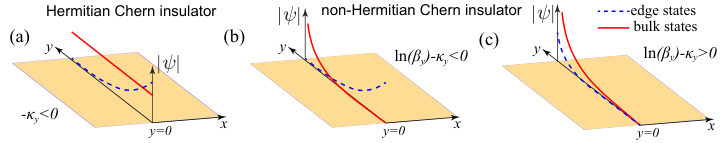
<figcaption class="paper-figure-caption"><b>Fig 4.</b> FIG. 4: Schematic plot of the sample. The dashed blue lines represent bottom edge states with |ψ| ∝e[ln(βy)−κy]y. Here, ln(βy) are induced by the NHSE. κy is the intrinsic localization of edge states originating from the nontrivial Chern numbers. (a) is the Hermitian cases with ln(βy) = 0. (b) and (c) mark the typical edge and bulk states with ln(βy) −κy &lt; 0 and ln(βy) −κy &gt; 0, respectively.</figcaption>
</figure>
<figure class="paper-figure-card">
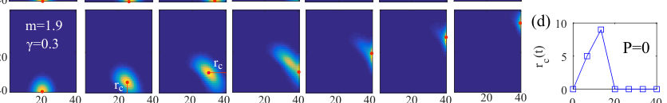
<figcaption class="paper-figure-caption"><b>Fig 5.</b> FIG. 5: (a) and (b) are the time evolutions of wave packet |ψ(r, t)| with boundary and bulk type evolutions, respectively. The red dots mark the wave packet centers with maximum values of |ψ(r, t)|. (c) and (d) The variation of rc(t) versus t. The corresponding index P are noted in the figures. The parameters are the same as those in the main text. The sample sizes are Nx × Ny = 40 × 40.</figcaption>
</figure>
</div>

<p><strong>Summary.</strong> This work analyzes wave packet dynamics in non-Hermitian Chern insulators, revealing a dynamical transition that is independent of the system's bulk topological invariant. The competition between the Non-Hermitian Skin Effect and intrinsic topological localization dictates whether the wave packet remains confined to the edge or spreads into the bulk.</p>
<p><strong>Why it may be interesting.</strong> The explicit distinction between topological invariants (like Chern numbers) and dynamical properties (like wave packet spreading) is crucial for understanding open quantum systems where dissipation or gain is present, suggesting that simple topological characterizations are insufficient.</p>
<details>
<summary>Detailed structure</summary>
<p><strong>Main problem.</strong> The paper investigates a dynamical transition in non-Hermitian Chern insulators, showing that wave packet evolution is not solely dictated by the topological Chern number.</p>
<p><strong>Main result.</strong> The system exhibits two distinct dynamical regimes—edge propagation or bulk spreading—whose transition line is distinct from the topological phase transition predicted by generalized-Brillouin zone theory.</p>
<p><strong>Method.</strong> The study uses wave packet tracking, analyzing the evolution governed by the time-dependent Schrödinger equation, and comparing the resulting dynamics to topological invariants like the Chern number.</p>
<p><strong>Model / system.</strong> The system is a non-Hermitian Chern insulator, modeled by a specific Hamiltonian involving Pauli matrices and parameters related to hopping and non-Hermiticity ($\gamma$).</p>
<p><strong>Key observables.</strong> Wave packet center location ($R_c(t)$), a diagnostic index $P$ (1 for edge, 0 for bulk), the Chern number ($C$), and the localization coefficient ($\lambda$).</p>
<p><strong>Important parameters / regimes.</strong> Non-Hermiticity strength ($\gamma$), topological parameters ($m, v$), and the ratio $eta_-^i / eta_+^i$.</p>
<p><strong>Assumptions / limitations.</strong> The analysis relies on the wave packet evolution formalism and assumes the applicability of the similarity transformation for analyzing edge states.</p>
<p><strong>Figures summary.</strong> Figures illustrate the phase diagram separating dynamical regimes (edge vs. bulk) and explicitly plot the distinct dynamical transition line against the topological transition line, showing their inconsistency.</p>
<p><strong>Paper structure.</strong> The paper first introduces the non-Hermitian model and the wave packet evolution. It then contrasts the topological prediction (GBZ theory) with the actual dynamical behavior, deriving the condition for the dynamical transition based on the competition between NHSE and intrinsic localization.</p>
</details>
<details>
<summary>Abstract</summary>
<p>We unveil a peculiar dynamical transition for the propagation of wave packets in non-Hermitian Chern insulators, where the evolution of the topological wave packets at the edge is not solely determined by the topological Chern number. Unlike the Hermitian Chern insulator, where a wave packet initiated at the edge propagates along the system boundary, here it may instead penetrate into the bulk. This behavior is attributed to the competition between the localization induced by conventional topology and the non-Hermitian skin effect. Specifically, when the former dominant, the wave packet will evolve along the boundary; otherwise, it will spread into the bulk. These features demonstrate that while the generalized-Brillouin zone framework reliably predicts topological phase transitions, it does not on its own specify the dynamical transitions.</p>
</details>
<p><sub><a href="#top">↑ back to top</a></sub></p>

<p><a id="paper-2609.34000"></a></p>
<h3 id="topological-chiral-edge-modes-in-the-continuum-of-a-trivial-bulk"><a href="http://arxiv.org/abs/2609.34000v1">Topological chiral edge modes in the continuum of a trivial bulk</a></h3>
<p><strong>Authors:</strong> Li Ge<br>
<strong>Type:</strong> theory · <strong>Category:</strong> other · <strong>PDF:</strong> <a href="https://arxiv.org/pdf/2609.34000v1">https://arxiv.org/pdf/2609.34000v1</a><br>
<strong>Analysis basis:</strong> full PDF text, analyzed in chunks
<strong>Topic relevance:</strong> 🔥 <code>driven-dissipative phase transition</code> <strong>4/5</strong> · <code>correlated / nonlocal dissipation</code> <strong>3/5</strong> · <code>analog quantum simulation</code> <strong>2/5</strong> · <code>methods for driven-dissipative</code> <strong>2/5</strong> · <code>non-equilibrium universality</code> <strong>2/5</strong> · <code>Keldysh / 2PI / non-Gaussian methods</code> <strong>1/5</strong></p>
<div class="figure-strip-hint">↔ Scroll figures horizontally</div>
<div class="paper-figures-scroll">
<figure class="paper-figure-card">
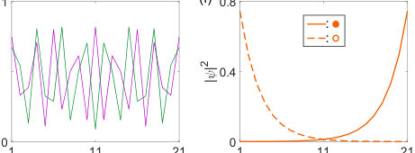
<figcaption class="paper-figure-caption"><b>Fig 1.</b> FIG. 1. Onset of CEMICs in a ribbon model. (a) Schematics showing the square lattice in a square domain and a vertical ribbon. Dotted lines indicate the omitted part. (b) Band structure of the vertical ribbon in (a) with 21 sites and s = 1.2. The wave functions of bands 8 and 9 from the bottom at kx = −π/2Λ (dots) are shown in (c). (d,e) Imaginary and real parts of the band structure with s = 2. The wave functions of the two CEMICs marked by the two large dots are shown in (f). Dotted lines in (d) show the upper limit of the effective gain and loss given by Eq. (4). Triangles in (d) and (e) indicate EPs.</figcaption>
</figure>
<figure class="paper-figure-card">
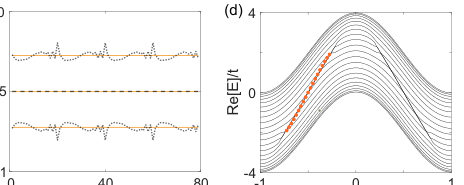
<figcaption class="paper-figure-caption"><b>Fig 2.</b> FIG. 3. Characterizing CEMICs in the square domain. (a) Consecutive phase difference in three CEMICs along the edge of the square domain. (b) Dispersion relation Re[E(¯k)] from (a) and superposed with the band structure from the ribbon model.</figcaption>
</figure>
<figure class="paper-figure-card">
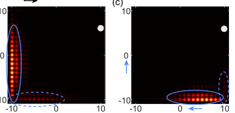
<figcaption class="paper-figure-caption"><b>Fig 3.</b> FIG. 5. Dynamics of the CW CEMIC with bulk exci- tation. All panels are the same as Fig. 4 except for the initial pulse momentum kx = 0 and the first frame at τ = 2.2t−1. Box, solid ellipse, dashed ellipse indicate bulk wave, CEMIC and its tail, respectively.</figcaption>
</figure>
<figure class="paper-figure-card">
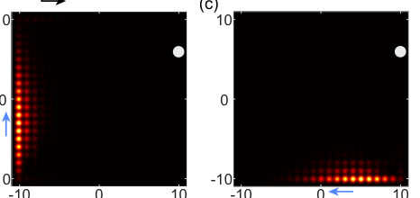
<figcaption class="paper-figure-caption"><b>Fig 4.</b> FIG. 4. Propagation of the CW CEMIC with a de- fect at the top edge. The snapshots are taken at time τ = 0, 4.4, 12.4, 20.4 in units of the inverse coupling t−1, each normalized by max|ψn|2 = 1. The width of the initial packet is σ = 4Λ. The other parameters and color scheme are the same as in Figs. 2(c,d).</figcaption>
</figure>
<figure class="paper-figure-card">

<figcaption class="paper-figure-caption"><b>Fig 5.</b> Fig. 5(a)]. However, the initial spread of the wave packet about kx = 0 causes an overlap with both the CW and CCW CEMIC bands. Due to its high gain, the former is amplified to a comparable intensity to the bulk wave after the first corner [see Fig. 5(b)]. This edge compo- nent becomes dominant as the wave further propagates [Fig. 5(c)], and it becomes almost identical to that in Fig. 4(c), except for the trailing edge that becomes more noticeable in Fig. 5(d). Not only can bulk excitation initialize a CEMIC but also assist a CEMIC bridging sizable “topological” defects in our system. As an example, we replace the asymmetric couplings by symmetric couplings in the bottom half of the right...</figcaption>
</figure>
</div>

<p><strong>Summary.</strong> This theoretical work proves that topological chiral edge modes can exist within the bulk continuum of a system that is otherwise topologically trivial. This phenomenon is driven by energy exchange at asymmetric edge couplings, inducing a Parity-Time (PT) transition rather than the non-Hermitian skin effect. The result is significant for designing novel waveguiding structures in photonics and acoustics.</p>
<p><strong>Why it may be interesting.</strong> The finding that topological edge states can exist in a trivial bulk, driven by non-Hermitian physics (PT transition) rather than traditional topological invariants, opens new avenues for designing robust waveguiding structures in photonics and acoustics.</p>
<details>
<summary>Detailed structure</summary>
<p><strong>Main problem.</strong> The paper demonstrates the existence of chiral edge modes (CEMICs) within the bulk energy continuum of a system that is otherwise topologically trivial.</p>
<p><strong>Main result.</strong> These CEMICs arise not from the non-Hermitian skin effect, but from energy exchange with the environment at asymmetric couplings, leading to a Parity-Time (PT) transition in the Brillouin zone.</p>
<p><strong>Method.</strong> The analysis involves deriving effective gain/loss terms from energy exchange at asymmetric junctions and analyzing the resulting complex band structure in both 1D ribbon and 2D square lattice geometries.</p>
<p><strong>Model / system.</strong> The model is a tight-binding square lattice analyzed in a ribbon or finite square domain, featuring asymmetric nearest-neighbor couplings ($t_s$ and $t/s$) along the edges while the bulk couplings are symmetric.</p>
<p><strong>Key observables.</strong> The existence and dispersion relation of the CEMICs, the complex energy spectrum, and the transition point ($s_c$) where the PT symmetry breaks.</p>
<p><strong>Important parameters / regimes.</strong> The asymmetry parameter ($s$), which controls the coupling ratio, and the critical coupling factor $s_c$, found to be related to the golden ratio.</p>
<p><strong>Assumptions / limitations.</strong> The edge localization is attributed to energy exchange with the environment at asymmetric junctions, modeling this effect as a PT transition rather than relying on explicit gain/loss potentials.</p>
<p><strong>Figures summary.</strong> Figures illustrate the band structure showing CEMICs embedded in the continuum, wave functions of these modes, and pulse propagation dynamics comparing bulk-assisted vs. defect-limited transport.</p>
<p><strong>Paper structure.</strong> The paper progresses by first establishing the concept of CEMICs in the continuum, deriving the effective gain/loss mechanism from asymmetric couplings, and then analyzing the resulting PT transition and the macroscopic limit where the mode onset is size-independent.</p>
</details>
<details>
<summary>Abstract</summary>
<p>Chiral edge modes in topological states of matter are routinely found inside band gaps, which may be deformed and shifted as a function of the lattice momentum. Here we show that they can exist inside a bulk band instead, i.e., in the continuum. These chiral edge modes in the continuum (CEMICs) are induced by introducing an imaginary magnetic flux to an otherwise topologically trivial two-dimensional system, realized by imposing asymmetric couplings along the edge. While the stronger couplings provide a preferred circulation direction, we find that the edge localization of CEMICs does \textit{not} originate from the non-Hermitian skin effect, which is typically associated with systems featuring asymmetric couplings and the open boundary condition. Instead, this edge localization is due to the energy exchange between the system and the environment at the asymmetric coupling junctions, which leads to a parity-time (PT) transition in the Brillouin zone. Intriguingly, the onset of CEMICs is independent of the system size in the macroscopic limit, which is given by the golden ratio between the asymmetric couplings and their geometric average.</p>
</details>
<p><sub><a href="#top">↑ back to top</a></sub></p>

<p><a id="paper-2609.35480"></a></p>
<h3 id="extracting-the-anyonic-exchange-phase-from-co-tunneling-through-an-open-quantum-dot"><a href="http://arxiv.org/abs/2609.35480v1">Extracting the anyonic exchange phase from co-tunneling through an open quantum dot</a></h3>
<p><strong>Authors:</strong> Felix Puster, Matthias Thamm, Bernd Rosenow<br>
<strong>Type:</strong> theory · <strong>Category:</strong> strongly correlated electrons · <strong>PDF:</strong> <a href="https://arxiv.org/pdf/2609.35480v1">https://arxiv.org/pdf/2609.35480v1</a><br>
<strong>Analysis basis:</strong> full PDF text, analyzed in chunks
<strong>Topic relevance:</strong> 🔥 <code>Keldysh / 2PI / non-Gaussian methods</code> <strong>4/5</strong> · <code>interference shaping light</code> <strong>2/5</strong> · <code>methods for driven-dissipative</code> <strong>2/5</strong> · <code>Full counting statistics</code> <strong>1/5</strong> · <code>analog quantum simulation</code> <strong>1/5</strong> · <code>driven-dissipative phase transition</code> <strong>1/5</strong> · <code>non-equilibrium universality</code> <strong>1/5</strong> · <code>quantum measurements</code> <strong>1/5</strong></p>
<div class="figure-strip-hint">↔ Scroll figures horizontally</div>
<div class="paper-figures-scroll">
<figure class="paper-figure-card">
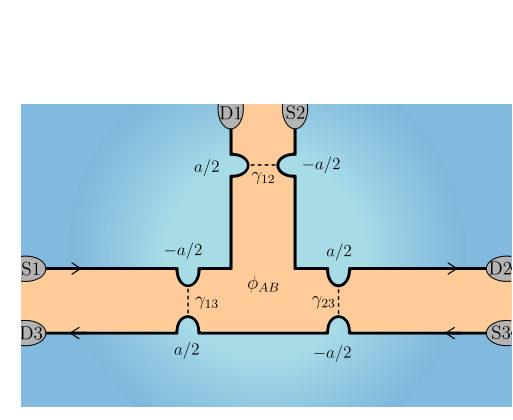
<figcaption class="paper-figure-caption"><b>Fig 1.</b> FIG. 1. Interferometer formed by three chiral edge segments, each connected to its two neighbors by a QPC with tunneling amplitudes γij. On each edge, the two QPCs are separated by a distance a. Voltage biases V1, V2, and V3 are applied to sources S1, S2, and S3, respectively, and the interference current I3,AB is measured in drain D3. The Aharonov–Bohm flux through the center area between the QPCs is denoted by ϕAB. Figure taken from [82].</figcaption>
</figure>
<figure class="paper-figure-card">
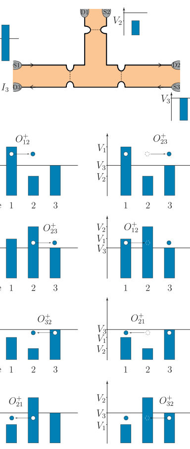
<figcaption class="paper-figure-caption"><b>Fig 2.</b> FIG. 2. Schematic voltage configurations relevant for the four processes. The top panel depicts the setup and voltage defi- nitions, where voltage V3 on edge 3 is used as the reference. The other panels show the tunneling paths for processes I–IV, which interfere with the reference process of direct tunneling between edges 1 and 3 to give rise to the current I3,AB. An operator O+ ij describes tunneling of a particle (blue circle) from edge i to edge j, which may leave behind a hole (white circle). For the co-tunneling processes in II and IV, first tun- neling of a particle creates a hole, which is then filled by a second particle. Processes I and II differ by an exchange of operators and...</figcaption>
</figure>
<figure class="paper-figure-card">
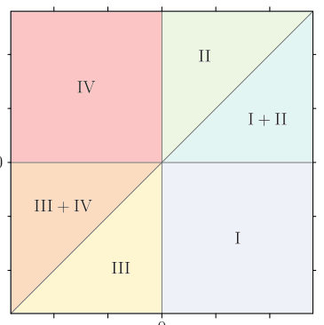
<figcaption class="paper-figure-caption"><b>Fig 3.</b> FIG. 3. Region diagram for the processes at zero temperature as a function of the voltages V1 −V3 and V2 −V3 using V3 as a reference voltage. The colors show the different regions and the labels indicate the process corresponding to the region. In the lower half of the upper right quadrant and in the upper half of the lower left quadrant, a mixture of two processes occurs.</figcaption>
</figure>
<figure class="paper-figure-card">
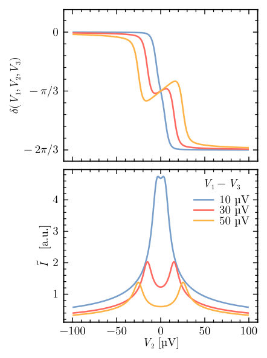
<figcaption class="paper-figure-caption"><b>Fig 4.</b> FIG. 4. Phase shift δ and amplitude ˜I of the Aharonov– Bohm dependent part of the tunneling current in drain D3, Eq. (18), as a function of V2 for different values of the voltage bias V1 −V3 with V1 = −V3 &gt; 0. Results are shown for a temperature of 10 mK, edge velocity v = 105 m/s, and a QPC distance of a = 1 µm. For V2 ≪V3, only process I contributes and the phase shift to the Aharonov–Bohm phase shows a stable plateau at 0. For V2 ≫V1, only process II contributes such that δ plateaus at π(1/3 −1). In between the phase evolves non-monotonically. Due to the density of states anomaly, the amplitude is peaked at the Fermi levels of edges 1 and 3, V2 = ±(V1 −V3)/2.</figcaption>
</figure>
<figure class="paper-figure-card">
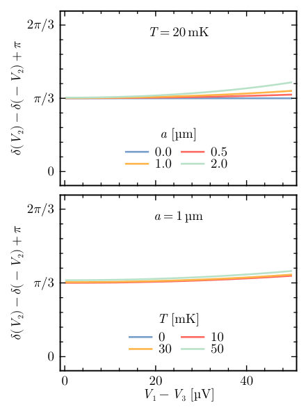
<figcaption class="paper-figure-caption"><b>Fig 5.</b> FIG. 5. Exchange phase δ(V1, V, V3) −δ(V1, −V, V3) + π ex- tracted from plateau values obtained as in Fig. 4 at V = 80 µV as a function of the bias V1 −V3. The upper panel shows re- sults for a temperature of T = 20 mK for different QPC dis- tances a. The lower panel uses a = 1 µm and shows extracted exchange phases for different temperatures. We find that for a wide range of biases, temperature, and QPC distances, the exchange phase of π/3 can reliably be extracted.</figcaption>
</figure>
</div>

<p><strong>Summary.</strong> This theoretical work analyzes an interferometer setup in a fractional quantum Hall state to measure the anyonic exchange phase. By calculating the co-tunneling current using a third-order Keldysh expansion, the authors demonstrate that the phase $   heta = \pi
u$ can be extracted from the interference pattern. This provides a robust theoretical pathway to probe fractional statistics using mesoscopic transport measurements.</p>
<p><strong>Why it may be interesting.</strong> The use of non-equilibrium Green's functions (Keldysh formalism) to calculate transport properties in strongly correlated, topologically ordered systems like FQH states is highly relevant to open quantum systems and mesoscopic physics.</p>
<details>
<summary>Detailed structure</summary>
<p><strong>Main problem.</strong> The paper aims to extract the anyonic exchange phase ($   heta$) characterizing fractional quantum Hall states by analyzing co-tunneling processes.</p>
<p><strong>Main result.</strong> The co-tunneling contribution to the interference current yields the exchange phase $  heta = \pi
u$ for Laughlin states, which can be extracted robustly through specific measurement configurations.</p>
<p><strong>Method.</strong> The analysis employs a non-equilibrium Keldysh calculation performed to third order in the tunneling amplitudes to determine the interference current.</p>
<p><strong>Model / system.</strong> The system is an interferometer built from three chiral edge segments of a Laughlin FQH state ($
u=1/m$), connected by quantum point contacts, allowing one segment to act as an open quantum dot.</p>
<p><strong>Key observables.</strong> The interference current ($I_{3,AB}$) and the resulting phase shift in Aharonov-Bohm oscillations.</p>
<p><strong>Important parameters / regimes.</strong> The filling fraction $
u$, the temperature ($T$), and the separation between the quantum point contacts.</p>
<p><strong>Assumptions / limitations.</strong> The primary assumptions involve the validity of the Luttinger liquid description and the ability to screen voltage-induced changes in the enclosed area for one extraction method.</p>
<p><strong>Figures summary.</strong> Figure 1 illustrates the three-segment interferometer geometry; other figures detail voltage configurations for different interference processes.</p>
<p><strong>Paper structure.</strong> The paper establishes the physical setup and theoretical framework using Luttinger liquid theory, develops the Keldysh calculation to find the co-tunneling current contribution, and finally presents two methods for extracting the phase $  heta$ from the measured interference current.</p>
</details>
<details>
<summary>Abstract</summary>
<p>The elementary excitations of fractional quantum Hall states obey anyonic statistics, described by an exchange phase $θ$ intermediate between the bosonic and fermionic values. We study an interferometer in which three chiral edge segments are pairwise connected by three quantum point contacts, so that, depending on the applied voltages, one of the segments acts as an open quantum dot: its spectrum is continuous, and tunneling through it is resonant without any gate tuning. This setup realizes the co-tunneling mechanism of a recently proposed antidot interferometer in a particularly simple setting. Using a non-equilibrium Keldysh calculation to third order in the tunneling amplitudes, we show that the interference current contains a co-tunneling contribution in which two quasiparticles are exchanged, so that for Laughlin states the exchange phase $θ=πν$ appears as the phase shift between the Aharonov-Bohm oscillations measured in two voltage configurations. We obtain a closed analytic expression for the interference current at finite temperature and finite separation between the quantum point contacts and show that, provided voltage-induced changes of the enclosed area are sufficiently screened, the exchange phase can be extracted from a robust phase-plateau difference. Alternatively, simultaneous measurements of the interference currents at two drains avoid this screening assumption and time-of-flight phases can be quantified analytically, allowing the exchange phase to be extracted by a controlled extrapolation with a few-percent systematic error.</p>
</details>
<p><sub><a href="#top">↑ back to top</a></sub></p>

<p><a id="paper-2609.33163"></a></p>
<h3 id="jfs-cryomem-a-cryogenic-memory-with-voltage-controlled-superconducting-devices-and-femtojoule-scale-writeread-energies"><a href="http://arxiv.org/abs/2609.33163v1">JFS-CryoMem: A Cryogenic Memory with Voltage-Controlled Superconducting Devices and Femtojoule-Scale Write/Read Energies</a></h3>
<p><strong>Authors:</strong> Md Rahatul Islam Udoy, Md Mazharul Islam, Juan P. Mendez, Denis Mamaluy, Aaron J. Muhowski, Samuel Hawkins, William M. Martinez, Courtney Sovinec, Wei Pan, Ahmedullah Aziz<br>
<strong>Type:</strong> both · <strong>Category:</strong> quantum information and computing · <strong>PDF:</strong> <a href="https://arxiv.org/pdf/2609.33163v1">https://arxiv.org/pdf/2609.33163v1</a><br>
<strong>Analysis basis:</strong> full PDF text, analyzed in chunks
<strong>Topic relevance:</strong> 🔥 <code>QC/QI experiment</code> <strong>4/5</strong></p>
<div class="figure-strip-hint">↔ Scroll figures horizontally</div>
<div class="paper-figures-scroll">
<figure class="paper-figure-card">
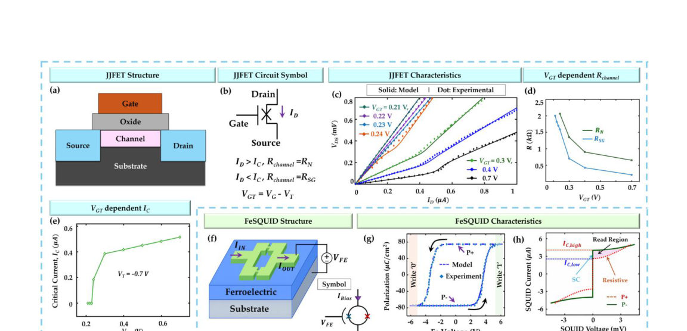
<figcaption class="paper-figure-caption"><b>Fig 1.</b> Fig. 1. Constituent devices and experimentally calibrated characteristics of the JFS-CryoMem cell. (a) Schematic cross section and (b) circuit representation of the voltage-controlled Josephson junction field-effect transistor (JJFET) selector. The channel exhibits the subgap resistance 𝑅𝑆𝐺 when |𝐼𝐷| &lt; 𝐼𝐶 and the normal-state resistance 𝑅𝑁 when |𝐼𝐷| ≥ 𝐼𝐶. (c) Comparison between the modeled and experimental 𝐼𝐷−𝑉𝐷𝑆 characteristics for different 𝑉𝐺𝑇 values. (d) Dependence of 𝑅𝑆𝐺 and 𝑅𝑁 on gate overdrive voltage and (e) modulation of the critical current 𝐼𝐶 by 𝑉𝐺𝑇. (f) Schematic structure and circuit symbol of the ferroelectric superconducting quantum interference device (FeSQUID), showing the...</figcaption>
</figure>
<figure class="paper-figure-card">
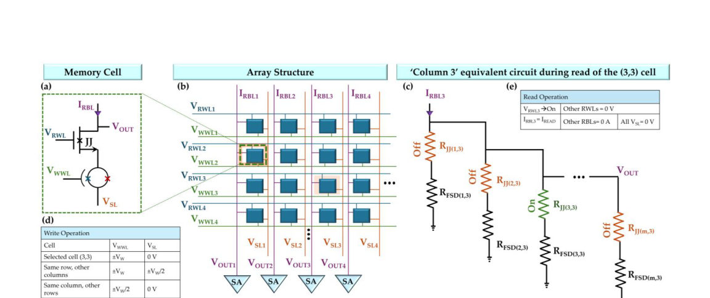
<figcaption class="paper-figure-caption"><b>Fig 2.</b> Fig. 2. Cell organization and array-level biasing of the JFS-CryoMem architecture. (a) Memory cell comprising a JJFET selector and a FeSQUID storage element. RWL, RBL, WWL, and SL denote the read word line, read bit line, write word line, and source line, respectively, while 𝑉𝑂𝑈𝑇 is the column output voltage. (b) Array structure with shared row and column interconnects and a sense amplifier (SA) connected to each column output. The highlighted cell indicates the selected (3,3) cell. (c) Equivalent circuit of column 3 during readout of the selected cell, where RJJ(i,3) and RFSD(i,3) represent the JJFET and FeSQUID resistances, respectively, in the 𝑖th branch of the column. (d) Bias...</figcaption>
</figure>
<figure class="paper-figure-card">
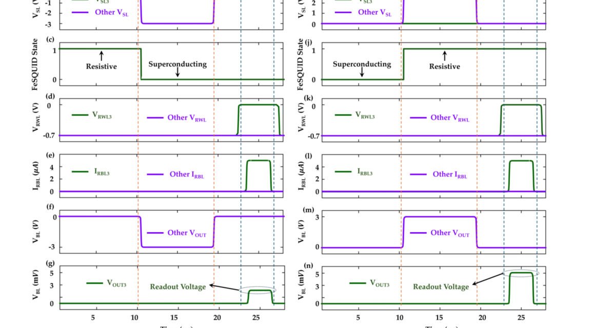
<figcaption class="paper-figure-caption"><b>Fig 3.</b> Fig. 3. Simulated write and read operation of the selected (3,3) cell in a 4 × 4 JFS-CryoMem array. Panels (a)-(g) show the applied bias signals, FeSQUID state transition, and column output voltage during writing and subsequent reading of logic ‘0’, while panels (h)-(n) show the corresponding operation for logic ‘1’. The read operation produces distinct 𝑉𝑂𝑈𝑇3 levels for the two stored logic states. The write operation uses the 𝑉/2 biasing scheme so that only the selected cell receives the full programming voltage, while half-selected cells receive half of the programming voltage. After the write voltage is removed, the FeSQUID retains its programmed polarization state, demonstrating...</figcaption>
</figure>
<figure class="paper-figure-card">
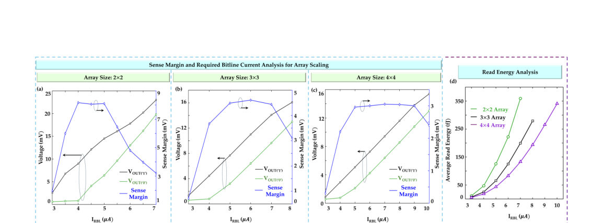
<figcaption class="paper-figure-caption"><b>Fig 4.</b> Fig. 4. Array-scaling analysis of the JFS-CryoMem read operation. The column output voltages corresponding to logic ‘0’ and logic ‘1’, together with the voltage sense margin (SM), as functions of the applied read bitline current for (a) 2 × 2, (b) 3 × 3, and (c) 4 × 4 arrays. As the array size increases, additional unselected branches divert a larger portion of the injected current, requiring a higher 𝐼𝑅𝐵𝐿 to drive the selected FeSQUID into the read region. The additional parallel branches also reduce the column-equivalent resistance and, consequently, the absolute output voltage at a given 𝐼𝑅𝐵𝐿. (d) Average read energy per cell obtained from circuit simulations as a function of 𝐼𝑅𝐵𝐿. At a...</figcaption>
</figure>
<figure class="paper-figure-card">
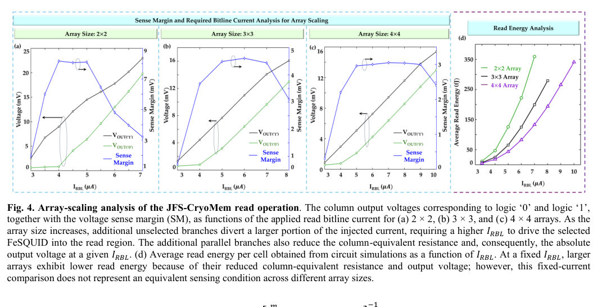
<figcaption class="paper-figure-caption"><b>Fig 5.</b> Figure 3 shows the simulated write and read operations of the selected (3,3) cell for a 4×4 memory array. During write ‘0’, we apply −6 V to 𝑉𝑊𝑊𝐿3 and −3 V to the other WWLs and unselected SLs, while keeping 𝑉𝑆𝐿3 at 0 V. The selected FeSQUID consequently switches from the resistive 𝑃+ state to the superconducting 𝑃− state. During write ‘1’, we reverse the bias polarities and apply +6 V and +3 V, switching the selected cell from 𝑃− to 𝑃+. After removing the programming voltage, the FeSQUID retains its state, confirming nonvolatile storage. The subsequent read pulses produce two distinct 𝑉𝑂𝑈𝑇3 levels without altering the stored state.</figcaption>
</figure>
</div>

<p><strong>Summary.</strong> This paper presents JFS-CryoMem, a novel cryogenic memory integrating a JJFET selector with an FeSQUID storage element for superconducting electronics. The authors demonstrate the device's ability to store data nonvolatily with femtojoule-scale energy consumption. Crucially, they analyze how array scaling affects read distinguishability and energy, providing a framework for building large-scale quantum memory.</p>
<p><strong>Why it may be interesting.</strong> This work directly addresses the hardware requirements for cryogenic quantum computing by proposing a superconducting memory element that operates at the necessary low temperatures and low energy scales.</p>
<details>
<summary>Detailed structure</summary>
<p><strong>Main problem.</strong> The development of a scalable cryogenic memory that must integrate nonvolatile storage, selective access, and low thermal disturbance for use in quantum, high-performance, and space-oriented computing systems.</p>
<p><strong>Main result.</strong> The JFS-CryoMem architecture successfully demonstrates selective programming and nonvolatile state retention, while analysis reveals critical trade-offs between array scaling, required bitline current, and read energy.</p>
<p><strong>Method.</strong> The study uses detailed circuit simulations, employing experimentally calibrated compact models for both the JJFET selector and the FeSQUID storage element.</p>
<p><strong>Model / system.</strong> The system, JFS-CryoMem, couples a voltage-controlled Josephson junction field-effect transistor (JJFET) selector with a ferroelectric superconducting quantum interference device (FeSQUID) storage element. The FeSQUID stores data in remanent-polarization states ($P^+$ or $P^-$), and the JJFET enables gate-controlled cell selection.</p>
<p><strong>Key observables.</strong> Readout voltage levels for logic '0' and '1', Sense Margin (SM), required bitline current ($I_{RBL}$), and read energy per cell.</p>
<p><strong>Important parameters / regimes.</strong> Operating temperature of 1 K, write energy ($\sim 27 	ext{ fJ}$), read energy ($\sim 10 	ext{ fJ}$), and array size up to $16 	imes 16$.</p>
<p><strong>Assumptions / limitations.</strong> The FeSQUID characteristics are approximated from measurements at 3 K for use at 1 K; the sense amplifier design is considered outside the scope of the work.</p>
<p><strong>Figures summary.</strong> Figures illustrate device schematics, $I-V$ characteristics for both components, and array-level simulations showing how readout voltage and Sense Margin change as a function of array size and applied bias current.</p>
<p><strong>Paper structure.</strong> The paper first introduces the architecture and device models (JJFET/FeSQUID), then demonstrates basic selective read/write operations, and finally analyzes the scaling behavior of the array, detailing the trade-offs in energy and distinguishability as the array grows.</p>
</details>
<details>
<summary>Abstract</summary>
<p>Scalable cryogenic systems require memory that combines nonvolatile storage, selective access, low thermal disturbance, and compatibility with superconducting electronics. We present a cryogenic memory architecture that integrates a voltage-controlled Josephson junction field-effect transistor (JJFET) selector with a ferroelectric superconducting quantum interference device (FeSQUID) storage element, hereafter termed JFS-CryoMem. The JJFET provides gate-controlled cell selection, whereas the FeSQUID stores information in stable remanent-polarization states. JFS-CryoMem features separate read and write path mechanisms that support nondestructive readout and independent optimization of programming and sensing conditions. The architecture is evaluated using experimentally calibrated compact models that reproduce the measured electrical characteristics of both constituent devices. We demonstrate selective programming using a half-bias scheme, nonvolatile state retention, and distinguishable readout in a $4 \times 4$ array while accounting for the selected cell and all unselected parallel branches. We then extend the analysis to arrays up to $16 \times 16$ and examine how array scaling alters current distribution, column-equivalent resistance, readout separation, required bitline current, and read energy. The results reveal the principal sensing and energy tradeoffs associated with larger arrays and identify the operating conditions required to preserve read distinguishability as the array grows. JFS-CryoMem provides a device-to-array framework for cryogenic memory in quantum, high-performance, and space-oriented computing systems.</p>
</details>
<p><sub><a href="#top">↑ back to top</a></sub></p>

<p><a id="paper-2609.34070"></a></p>
<h3 id="flare-flow-matching-with-local-axis-angle-representations-for-stochastic-micromagnetic-evolution"><a href="http://arxiv.org/abs/2609.34070v1">FLARE: Flow Matching with Local Axis-Angle Representations for Stochastic Micromagnetic Evolution</a></h3>
<p><strong>Authors:</strong> Pengyu Li, Renjie Tong, Xuanlue Jiang, Jianmin Li, Yuanyuan Zhou<br>
<strong>Type:</strong> theory · <strong>Category:</strong> numerical methods · <strong>PDF:</strong> <a href="https://arxiv.org/pdf/2609.34070v1">https://arxiv.org/pdf/2609.34070v1</a><br>
<strong>Analysis basis:</strong> full PDF text, analyzed in chunks
<strong>Topic relevance:</strong> <code>analog quantum simulation</code> <strong>3/5</strong> · <code>methods for driven-dissipative</code> <strong>3/5</strong> · <code>Keldysh / 2PI / non-Gaussian methods</code> <strong>2/5</strong> · <code>driven-dissipative phase transition</code> <strong>2/5</strong> · <code>non-equilibrium universality</code> <strong>2/5</strong> · <code>quantum measurements</code> <strong>1/5</strong></p>
<div class="figure-strip-hint">↔ Scroll figures horizontally</div>
<div class="paper-figures-scroll">
<figure class="paper-figure-card">
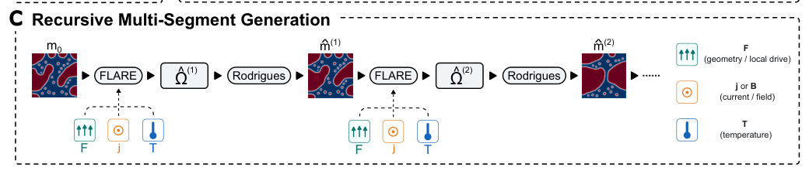
<figcaption class="paper-figure-caption"><b>Fig 1.</b> FIG. 1. Overview of FLARE. a: During inference, ODE sampling transports an initial Gaussian rotation field Ω0 along the learned velocity field to the terminal rotation prediction bΩ⋆= Ω(1). b: FLARE represents the transition from the anchor magnetization ms to the target mt as a local axis–angle rotation field Ω⋆and trains a conditional U-Net with self-attention using the CFM path Ωτ = (1 −τ)Ω0 + τΩ⋆. Spatial conditions F are concatenated with Ωτ and ms, while the flow time τ, physical horizon ∆t, and global conditions cg are injected through AdaGroupNorm. c: The sampled terminal rotation field is mapped back to magnetization space through Rodrigues rotation. For multi-segment dynamics,...</figcaption>
</figure>
<figure class="paper-figure-card">

<figcaption class="paper-figure-caption"><b>Fig 2.</b> FIG. 2. Overview of the task, generated dynamics, and empirical performance. a: The multi-outcome effects of our model. b: runtime-only comparison on one H200. c: Pareto-optimal plot of the speeds and distribution scores for different models. d: the corresponding results from the MuMax3 simulation, showing representative multi-segment magnetization outcomes.</figcaption>
</figure>
<figure class="paper-figure-card">

<figcaption class="paper-figure-caption"><b>Fig 3.</b> FIG. 3. Illustration of the local translation-matching procedure. The 256 × 256 magnetization field is divided into 4 × 4 local patches, and each patch is independently matched within a translation range of ±16 grid cells along each spatial direction.</figcaption>
</figure>
<figure class="paper-figure-card">

<figcaption class="paper-figure-caption"><b>Fig 4.</b> FIG. 4. Exact-control complete-path distribution diagnostics. (a) Distribution Score at the final post-relaxation endpoint after prediction-only handoff. (b) Repeat-paired angle versus angular energy distance; lower-left is better and the star marks FLARE. The two axes need not rank a stochastic model identically. (c) Paired Distribution-Score ratios for FLARE relative to each 50,000 learned-dynamics baseline with a reported Distribution Score; ratios above one favor FLARE and bars are 95% base-cluster intervals. The plotted comparison uses five outcomes for every method and 33 complete-path conditions from Table I.</figcaption>
</figure>
<figure class="paper-figure-card">

<figcaption class="paper-figure-caption"><b>Fig 5.</b> FIG. 5. Conditional outcome variability under identical physical inputs. Each row fixes the exact magnetization anchor, physical controls, and target horizon, and compares 30 independent MuMax3 thermal outcomes, 30 fresh Stage 1 FLARE ODE–10 draws, and one deterministic Poseidon-T prediction. Six representative fields from each stochastic ensemble are selected using the same deterministic medoid-based rule, while all 30 outcomes are included in the observable scatter plot. (a) Texture and topological-charge variability. (b) Domain-pattern variability. (c) Topology-count variability. (d) An additional case with texture and topological-charge variability. Across these cases, FLARE generates...</figcaption>
</figure>
</div>

<p><strong>Summary.</strong> This paper introduces FLARE, a novel flow-matching framework designed to predict stochastic magnetization evolution directly over long time horizons without iterative time-stepping. By reformulating the problem in terms of local axis-angle rotations, FLARE achieves superior accuracy and massive computational speedups compared to traditional micromagnetic solvers. It represents a significant advancement in using generative AI models for simulating complex, continuous physical dynamics.</p>
<p><strong>Why it may be interesting.</strong> While the physics is classical magnetism, the core methodology—using flow matching and learned continuous dynamics to bypass explicit time-stepping for complex physical evolution—is highly relevant to modeling non-equilibrium dynamics in quantum systems (e.g., quantum quench dynamics or open quantum system evolution).</p>
<details>
<summary>Detailed structure</summary>
<p><strong>Main problem.</strong> The primary challenge is the computationally expensive, step-by-step prediction of stochastic, long-horizon magnetization evolution governed by the Landau-Lifshitz-Gilbert (LLG) equation.</p>
<p><strong>Main result.</strong> FLARE achieves significant improvements in accuracy (e.g., 29.9% lower angular energy distance) and provides a massive speedup ($3,062	imes$) over established micromagnetic solvers.</p>
<p><strong>Method.</strong> The authors propose FLARE, a flow-matching framework that reformulates stochastic finite-time prediction as conditional transport over local axis-angle rotations, avoiding explicit time-stepping.</p>
<p><strong>Model / system.</strong> The system is magnetization dynamics ($\mathbf{m}$) on a magnetic film, governed by the LLG equation. The model learns the distribution of the rotation required to map an initial state ($\mathbf{m}_s$) to a target state ($\mathbf{m}_t$).</p>
<p><strong>Key observables.</strong> Angular energy distance, fair energy score, magnetization field ($\mathbf{m}$), and the local axis-angle rotation field ($\mathbf{\Omega}^\star$).</p>
<p><strong>Important parameters / regimes.</strong> The prediction horizon ($\Delta t$), the number of segments in a multi-stage protocol, and the underlying magnetic parameters ($\eta, \xi_t$).</p>
<p><strong>Assumptions / limitations.</strong> The method assumes that the dynamics can be accurately modeled by conditioning the flow matching on the physical prediction horizon and that the rotation-space formulation preserves the intrinsic geometry of the magnetization.</p>
<p><strong>Figures summary.</strong> Figures illustrate the inference process via ODE sampling of rotation fields, the training process using the CFM path, and comparisons of time-resolved autoregressive rollouts across various magnetic transitions.</p>
<p><strong>Paper structure.</strong> The paper introduces FLARE, details its rotation-space formulation and training via Flow Matching, demonstrates its performance against state-of-the-art solvers across various magnetic transitions, and concludes with a comprehensive comparison of its capabilities and limitations.</p>
</details>
<details>
<summary>Abstract</summary>
<p>Long-horizon micromagnetic simulation remains expensive because conventional and learned solvers typically propagate Landau--Lifshitz--Gilbert (LLG) dynamics step by step. Existing learned approaches generally retain stepwise integration or model deterministic evolution, leaving full-field, direct-horizon stochastic prediction largely unexplored. We propose FLARE, a flow-matching framework that recasts stochastic finite-time magnetization prediction as conditional transport over anchor-relative local axis-angle rotations. This rotation-space formulation respects the intrinsic geometry of magnetization dynamics and preserves pointwise unit norm by construction. By explicitly conditioning on the physical prediction horizon, FLARE directly generates full-field stochastic endpoints across multiple target times without stepwise integration. Against the strongest single-checkpoint external baseline on each metric, FLARE achieves 29.9% lower angular energy distance ($15.30^\circ$), and a 37.3% lower fair energy score (0.393). On a representative composed 5-ns two-segment protocol, FLARE achieves a $3{,}062\times$ best-batch speedup over the widely used GPU micromagnetic solver MuMax$^3$ on a single GPU.</p>
</details>
<p><sub><a href="#top">↑ back to top</a></sub></p>

<p><a id="paper-2609.34040"></a></p>
<h3 id="multimode-oscillation-and-its-route-to-chaos-in-transverse-mode-coupled-optomechanical-resonators"><a href="http://arxiv.org/abs/2609.34040v1">Multimode oscillation and its route to chaos in transverse-mode-coupled optomechanical resonators</a></h3>
<p><strong>Authors:</strong> Motoki Asano, Lalit Maharjan, Hiroshi Yamaguchi<br>
<strong>Type:</strong> experiment · <strong>Category:</strong> other · <strong>PDF:</strong> <a href="https://arxiv.org/pdf/2609.34040v1">https://arxiv.org/pdf/2609.34040v1</a><br>
<strong>Analysis basis:</strong> full PDF text, analyzed in chunks
<strong>Topic relevance:</strong> <code>driven-dissipative phase transition</code> <strong>3/5</strong> · <code>methods for driven-dissipative</code> <strong>2/5</strong> · <code>non-equilibrium universality</code> <strong>2/5</strong> · <code>analog quantum simulation</code> <strong>1/5</strong> · <code>quantum measurements</code> <strong>1/5</strong> · <code>quantum optics experiment</code> <strong>1/5</strong></p>
<div class="figure-strip-hint">↔ Scroll figures horizontally</div>
<div class="paper-figures-scroll">
<figure class="paper-figure-card">

<figcaption class="paper-figure-caption"><b>Fig 1.</b> FIG. 1. (a) Concept of coupled microbottle optomechanical array. (b) Optical microscope image of fabricated device. Dif- ferently colored shaded areas indicate individual microbottle structures. (c) Thermally driven mechanical fluctuation spec- trum showing multiple collective mechanical modes. (d) Mini- mum resonance detuning, ∆D(f), for different nonlinear order D. Dashed line denotes average mechanical linewidth, indi- cating that low-order internal resonances remain spectrally resolved.</figcaption>
</figure>
<figure class="paper-figure-card">

<figcaption class="paper-figure-caption"><b>Fig 2.</b> FIG. 2. (a) Optical transmission and (b) mechanical power spectra measured while sweeping the laser wavelength. (c) Representative single-mode self-sustained oscillation. (d) Representative two-mode self-sustained oscillation with non- linear mixing sidebands. (e) Average minimum resonance de- tuning ∆10(f) as a function of input optical power. Error bars indicate the standard deviation, and the dashed line denotes the average mechanical linewidth.</figcaption>
</figure>
<figure class="paper-figure-card">

<figcaption class="paper-figure-caption"><b>Fig 3.</b> FIG. 4. (a) Mechanical power spectra as laser frequency is varied, showing successive emergence of ∆f/2 and ∆f/3 beat-frequency components before transition to a broadband state. (b) Estimated largest Lyapunov exponent (LLE) ob- tained from experimentally measured time series.</figcaption>
</figure>
<figure class="paper-figure-card">

<figcaption class="paper-figure-caption"><b>Fig 4.</b> FIG. 3. (a) Representative mechanical power spectrum show- ing simultaneous oscillation of three collective modes. (b) Enlarged view of the three oscillation peaks. (c) Minimum resonance detuning ∆D(f) evaluated under two optical oper- ating conditions. Dashed line indicates average mechanical linewidth.</figcaption>
</figure>
<figure class="paper-figure-card">

<figcaption class="paper-figure-caption"><b>Fig 5.</b> FIG. 5. Measurement setup</figcaption>
</figure>
</div>

<p><strong>Summary.</strong> The researchers utilized a transverse-mode-coupled optomechanical resonator array to study complex nonlinear dynamics. They successfully achieved stable multi-mode oscillations by engineering the mechanical modes to bypass resonance-induced locking. The system was shown to transition systematically from regular multi-mode states through fractional beat patterns into a chaotic broadband state.</p>
<p><strong>Why it may be interesting.</strong> This work provides a concrete, scalable experimental realization of exploring high-dimensional nonlinear dynamics, moving beyond simple two-mode systems and demonstrating a controlled route to chaos in a mechanical network driven by optical coupling.</p>
<details>
<summary>Detailed structure</summary>
<p><strong>Main problem.</strong> The challenge of experimentally accessing and studying stable, high-dimensional multimode nonlinear dynamics in coupled mechanical systems while avoiding mode locking caused by low-order internal resonances.</p>
<p><strong>Main result.</strong> The authors demonstrated stable two- and three-mode self-sustained oscillations in a transverse-mode-coupled optomechanical resonator, which subsequently transitioned through fractional beat-frequency states into a broadband regime indicative of deterministic chaos.</p>
<p><strong>Method.</strong> The study employed an optomechanical resonator array, using laser frequency sweeping and time-series analysis (e.g., Largest Lyapunov Exponent estimation) to characterize the system's nonlinear dynamics.</p>
<p><strong>Model / system.</strong> The platform is an elastically coupled array of microbottle resonators fabricated on a silica fiber, coupled to an optical cavity. This system allows for the engineering of collective mechanical modes and the introduction of optically controllable nonlinear interactions.</p>
<p><strong>Key observables.</strong> Mechanical power spectral density, minimum resonance detuning ($\Delta D(f)$), beat frequencies ($\Delta f/2, \Delta f/3$), and the Largest Lyapunov Exponent (LLE).</p>
<p><strong>Important parameters / regimes.</strong> Laser frequency/wavelength, input optical power, and the degree of coupling between mechanical modes.</p>
<p><strong>Assumptions / limitations.</strong> The stability of observed multi-mode states is attributed to the engineered transverse modes, which successfully suppress trivial low-order internal resonances.</p>
<p><strong>Figures summary.</strong> Figures show the concept and fabrication of the coupled array, power spectral density confirming multiple collective modes, and plots demonstrating the transition from stable multi-mode oscillation to a broadband state accompanied by increasing LLE.</p>
<p><strong>Paper structure.</strong> The paper progresses by first establishing the platform's ability to support stable multi-mode oscillations by avoiding low-order resonances. It then maps the system's dynamics by observing successive spectral fractionalization ($\Delta f/2, \Delta f/3$) as the driving conditions change, culminating in the evidence of deterministic chaos via the LLE analysis.</p>
</details>
<details>
<summary>Abstract</summary>
<p>Nonlinear oscillators exhibit rich collective phenomena including synchronization, bifurcation, and chaos. Experimentally accessing multimode nonlinear dynamics, however, remains challenging because low-order internal resonances readily induce mode locking and suppress stable multimode oscillation. Here, we demonstrate a transverse-mode-coupled optomechanical platform that combines engineered collective mechanical modes with optically controllable nonlinear interactions. The engineered transverse mechanical modes enable stable two- and three-mode self-sustained oscillations while suppressing trivial low-order internal resonances. By varying the laser frequency, we observe successive beat-frequency fractionalization (Δf/2 and Δf/3), followed by a broadband state exhibiting enhanced trajectory divergence consistent with deterministic chaos. These results establish transverse-mode-coupled optomechanical resonators as a scalable and tunable platform for exploring high-dimensional nonlinear dynamics in interacting mechanical networks.</p>
</details>
<p><sub><a href="#top">↑ back to top</a></sub></p>

<p><a id="paper-2609.34037"></a></p>
<h3 id="tapered-fibre-fabry-perot-cavities-for-the-generation-of-near-visible-phase-locked-and-broadband-kerr-frequency-combs"><a href="http://arxiv.org/abs/2609.34037v1">Tapered Fibre Fabry-Pérot Cavities for the Generation of Near-Visible, Phase-locked, and Broadband Kerr Frequency Combs</a></h3>
<p><strong>Authors:</strong> Matthew Macnaughtan, Yiqing Xu, Miro Erkintalo, Stéphane Coen, Stuart G. Murdoch<br>
<strong>Type:</strong> experiment · <strong>Category:</strong> other · <strong>PDF:</strong> <a href="https://arxiv.org/pdf/2609.34037v1">https://arxiv.org/pdf/2609.34037v1</a><br>
<strong>Analysis basis:</strong> full PDF text, analyzed in chunks
<strong>Topic relevance:</strong> <code>interference shaping light</code> <strong>3/5</strong> · <code>quantum optics experiment</code> <strong>3/5</strong> · <code>driven-dissipative phase transition</code> <strong>2/5</strong> · <code>analog quantum simulation</code> <strong>1/5</strong> · <code>methods for driven-dissipative</code> <strong>1/5</strong></p>
<div class="figure-strip-hint">↔ Scroll figures horizontally</div>
<div class="paper-figures-scroll">
<figure class="paper-figure-card">

<figcaption class="paper-figure-caption"><b>Fig 1.</b> Fig. 1 (a) Schematic of our experimental setup. AM: amplitude modulator; PPR: pulse picker; EDFA: erbium- doped fibre amplifier; PC: polarisation controller; PBS: polarisation beam splitter; SSB: single-sideband generator; PM: phase modulator; OSA: optical spectrum analyser; PD: photodiode; PID: proportional-integral-derivative con- troller; PPLN: periodically poled lithium niobate. (b) Illustration of β2 (solid blue curve left axis), and γ (dashed red curve right axis) across the TFFP length. (c) Illus- tration of how the fibre diameter varies across the TFFP length.</figcaption>
</figure>
<figure class="paper-figure-card">

<figcaption class="paper-figure-caption"><b>Fig 2.</b> Fig. 2 (a) The average second-order dispersion ¯β2 as a function of wavelength for TFFP A, with the blue dot at 760.5 nm highlighting the ZDW. (b) Pseudo-colour spectral map of a detuning scan at a peak drive power of Pp = 0.75 W. (c) Spectral profile of the intracavity field obtained experimentally (blue curve) and numerically (red curve) at a detuning of 0.12 rad. The left inset shows the experimental electronic beat note (measured from the optical signal filtered between 773 nm and 780 nm) of the CS state, while the right inset shows the temporal intensity profile obtained through simulation.</figcaption>
</figure>
<figure class="paper-figure-card">

<figcaption class="paper-figure-caption"><b>Fig 3.</b> Fig. 3 (a) Pseudo-coloured spectral map of a detuning ramp where Pp = 1 W in TFFP-B. The dashed (dotted) white curve corresponds to the lower (upper) state DW phase matching solution. (b) Single spectral trace showing both an experimentally acquired 2-peak ZDS (blue curve), and a simulated one (red curve) when δ = 0.18 rad and Pp = 1 W. The top right inset shows the corresponding temporal intensity profile obtained via simulation, whereas the top left inset shows the experimental electronic beat note.</figcaption>
</figure>
<figure class="paper-figure-card">

<figcaption class="paper-figure-caption"><b>Fig 4.</b> Fig. 4 (a) Pseudo-coloured spectral map showing a detuning ramp in TFFP-C with Pp = 1.2 W and ∆T = 0 fs, where the white dashed curves represent the lower state DW phase matching solutions. (b) Single spectral traces of the intracavity field (at δ = 0.1 rad and Pp = 1.2 W) as ∆T is swept from positive to negative values (where varying trace colour correspond to different ∆T). (c) Pseudo-coloured spectral map showing a desynchronisation ramp with Pp = 1.2 W and δ = 0.1 rad. (d) Single spectral trace of the intracavity field when Pp = 1.2 W, ∆T = −21 fs, and δ = 0.1 rad. The blue (red) curve is the experimentally (numerically) acquired spectra, with the inset showing the temporal intensity...</figcaption>
</figure>
</div>

<p><strong>Summary.</strong> This paper reports on using a Tapered Fibre Fabry-Pérot resonator to generate broadband, phase-locked Kerr frequency combs in the near-visible spectrum. By engineering the fibre's dispersion and leveraging enhanced nonlinearity, the authors successfully demonstrated multiple nonlinear states, including zero-dispersion and Raman solitons. This establishes the TFFP resonator as a versatile platform for advanced coherent light source development.</p>
<p><strong>Why it may be interesting.</strong> This work is highly relevant to quantum optics and open quantum systems because it demonstrates precise control over nonlinear wave dynamics (solitons and combs) in a highly tunable, low-loss optical cavity platform, which is crucial for quantum light sources.</p>
<details>
<summary>Detailed structure</summary>
<p><strong>Main problem.</strong> The primary goal is the generation of near-visible, phase-locked, and broadband Kerr frequency combs.</p>
<p><strong>Main result.</strong> The authors successfully demonstrated the generation of a full suite of coherent nonlinear structures, including zero-dispersion solitons and Raman solitons, in the near-visible regime using a tapered fibre Fabry-Pérot resonator.</p>
<p><strong>Method.</strong> The technique involves engineering the dispersion profile of a Fabry-Pérot cavity by incorporating a tapered silica fibre, which enhances nonlinearity and controls the dispersion regime.</p>
<p><strong>Model / system.</strong> The physical system is a Tapered Fibre Fabry-Pérot (TFFP) resonator. The key mechanism relies on geometric dispersion engineering to achieve net anomalous or near-zero dispersion in the near-visible regime, while the tapered geometry enhances the Kerr nonlinearity significantly.</p>
<p><strong>Key observables.</strong> Broadband spectral profiles, cavity solitons (CSs), zero-dispersion solitons (ZDSs), switching wave combs, and Raman solitons.</p>
<p><strong>Important parameters / regimes.</strong> Near-visible wavelength (e.g., 770.5 nm), high Kerr nonlinearity enhancement ($>10	imes$), and the ability to tune the dispersion ($eta_2$) across anomalous, zero, and normal regimes.</p>
<p><strong>Assumptions / limitations.</strong> The analysis assumes that the fundamental mode is exclusively used, which helps maintain spectral cleanliness by preventing avoided-mode crossings.</p>
<p><strong>Figures summary.</strong> Figures illustrate the setup, the engineered dispersion ($ar{eta}_2$ vs. $\lambda$), and pseudo-colour spectral maps and profiles confirming the existence of different soliton types (CS, ZDS, SW, RS) across varying cavity detunings.</p>
<p><strong>Paper structure.</strong> The paper establishes the TFFP platform as a versatile tool, demonstrating the generation of various nonlinear structures (CSs, ZDSs, SW combs, RSs) by actively controlling the cavity dispersion regime through fibre tapering and detuning scans.</p>
</details>
<details>
<summary>Abstract</summary>
<p>We demonstrate the generation of near-visible, broadband Kerr frequency combs using a tapered fibre Fabry-Pérot resonator. By incorporating micron-diameter tapered silica fibre into a pulsed-driven Fabry-Pérot configuration, we exploit geometric dispersion engineering to overcome the strong normal dispersion intrinsic to silica (and nearly all materials) at short wavelengths, achieving net anomalous dispersion in the near-visible regime. The strong mode confinement of the tapered fibre simultaneously enhances the Kerr nonlinearity by over an order of magnitude relative to standard fibre, substantially reducing the threshold drive power for nonlinear structure formation. Through precise control of the cavity fabrication, we experimentally demonstrate and numerically confirm a rich suite of coherent, phase-locked nonlinear structures, including conventional anomalous dispersion cavity solitons, zero dispersion solitons with spectral bandwidths exceeding 16 THz between 750 nm and 800 nm, as well as switching wave combs and broadband Raman solitons, the latter also reported here for the first time in the near-visible regime. Our results establish the tapered fibre Fabry-Pérot resonator as a versatile platform for near-visible and potentially visible coherent frequency comb generation.</p>
</details>
<p><sub><a href="#top">↑ back to top</a></sub></p>

<p><a id="paper-2609.35085"></a></p>
<h3 id="quorum-sensing-with-density-enhanced-motility-and-size-regulation"><a href="http://arxiv.org/abs/2609.35085v1">Quorum sensing with density-enhanced motility and size regulation</a></h3>
<p><strong>Authors:</strong> Itay Azizi<br>
<strong>Type:</strong> theory · <strong>Category:</strong> statistical mechanics · <strong>PDF:</strong> <a href="https://arxiv.org/pdf/2609.35085v1">https://arxiv.org/pdf/2609.35085v1</a><br>
<strong>Analysis basis:</strong> full PDF text, analyzed in chunks
<strong>Topic relevance:</strong> <code>driven-dissipative phase transition</code> <strong>3/5</strong> · <code>non-equilibrium universality</code> <strong>3/5</strong> · <code>methods for driven-dissipative</code> <strong>2/5</strong> · <code>Frenkel-Kontorova</code> <strong>1/5</strong></p>
<div class="figure-strip-hint">↔ Scroll figures horizontally</div>
<div class="paper-figures-scroll">
<figure class="paper-figure-card">

<figcaption class="paper-figure-caption"><b>Fig 1.</b> FIG. 1: Density-enhanced motility and size regulation. When the local density exceeds a critical value equal to the global density, ρg, the particle increases both its motility, from Pe = 0 to Pe = b, and its size, from σs to qσs.</figcaption>
</figure>
<figure class="paper-figure-card">

<figcaption class="paper-figure-caption"><b>Fig 2.</b> FIG. 3: Snapshots of steady states at a large sensing radius, Rsense = 15σ, showing the dependence of the resulting pat- terns on the size ratio q and activity b. Big particles are shown in red, while small particles are shown in blue. Increasing ac- tivity enhances pattern formation by the small particles, lead- ing to labyrinthine structures composed of bands with peri- staltic deformations. As activity increases, the active fraction decreases.</figcaption>
</figure>
<figure class="paper-figure-card">

<figcaption class="paper-figure-caption"><b>Fig 3.</b> FIG. 2: Snapshots of steady states at a small sensing radius, Rsense = 5σ, as a function of the size ratio q and activity b. Big particles are shown in red, while small particles are shown in blue. Increasing activity leads to increasingly pronounced pattern formation, characterized by labyrinthine structures formed by the small particles. As activity increases, the active fraction decreases.</figcaption>
</figure>
<figure class="paper-figure-card">

<figcaption class="paper-figure-caption"><b>Fig 4.</b> FIG. 5: Steady-state active fraction as a function of the size ratio q for different values of activity and sensing radius. The active fraction changes mostly as a function of activity, but barely changes as a function of size ratio</figcaption>
</figure>
<figure class="paper-figure-card">

<figcaption class="paper-figure-caption"><b>Fig 5.</b> FIG. 4: Steady-state area fraction, ϕarea, as a function of the size ratio q for different values of activity and sensing ra- dius. For q close to unity, the area fraction is slightly below unity. At high activity, the area fraction decreases signifi- cantly, reaching values as low as ϕarea ≈0.55.</figcaption>
</figure>
</div>

<p><strong>Summary.</strong> This work models quorum sensing in a system where particle size and motility increase when local density is high. Using Langevin dynamics, the authors show that this density-feedback mechanism leads to complex emergent structures like bands and labyrinths. The findings reveal that the pattern size is robustly controlled by the sensing radius, independent of the particle size contrast.</p>
<p><strong>Why it may be interesting.</strong> The study models non-equilibrium pattern formation driven by local density feedback, which shares conceptual links with active matter systems and pattern formation studied in non-equilibrium statistical mechanics.</p>
<details>
<summary>Detailed structure</summary>
<p><strong>Main problem.</strong> The study investigates how coupling local density, particle size, and motility, mediated by quorum sensing, alters the emergent large-scale morphology of a particle system.</p>
<p><strong>Main result.</strong> The characteristic pattern length scale is controlled by the sensing radius and remains independent of the particle size ratio, while the total occupied area decreases as the size ratio increases.</p>
<p><strong>Method.</strong> The research employs Langevin dynamics simulations to model particle movement and state changes based on local density measurements.</p>
<p><strong>Model / system.</strong> The model simulates $N=4000$ particles in 2D, where particle size and motility are density-enhanced. Particles switch between 'small/passive' and 'big/active' states based on local density exceeding the global density.</p>
<p><strong>Key observables.</strong> Characteristic pattern length scale, total occupied area ($\phi_{	ext{area}}$), and active fraction ($\phi_{	ext{active}}$).</p>
<p><strong>Important parameters / regimes.</strong> Sensing radius ($R_{	ext{sense}}$), size ratio ($q$), and activity parameter ($b$).</p>
<p><strong>Assumptions / limitations.</strong> The model assumes that particle behavior (size and motility) is governed by a simple threshold mechanism relative to global density, and the biological comparisons are for intuitive scale only.</p>
<p><strong>Figures summary.</strong> Figures illustrate pattern evolution (spots, holes, bands, labyrinths) under varying size ratios and activity levels, showing the dependence of area and active fractions on these parameters.</p>
<p><strong>Paper structure.</strong> The paper develops the model by defining the density-dependent rules for size and motility, presents simulation results showing pattern formation across different parameter regimes, and concludes by discussing model extensions.</p>
</details>
<details>
<summary>Abstract</summary>
<p>Motivated by biological systems and my previous studies of quorum sensing with density-enhanced motility, I study a model of density-enhanced size and motility, in which both particle size and motility increase when the local density (over a lengthscale larger than particle diameter) exceeds the global density. The emergent structures along different size ratios are spots, holes, bands and labyrinths controlled by several distinct observations. First, the characteristic pattern length scale is controlled by the sensing radius and remains approximately independent of the size ratio. Second, the total area occupied by the particles decreases with increasing size ratio. Third, the active fraction barely depends on the size ratio. These results demonstrate how both particle size and motility can couple microscopic regulation to large-scale pattern formation. I conclude by discussing possible extensions of the model.</p>
</details>
<p><sub><a href="#top">↑ back to top</a></sub></p>

<p><a id="paper-2609.35125"></a></p>
<h3 id="capacitance-sensing-in-bilayer-graphene-with-gate-reflectometry"><a href="http://arxiv.org/abs/2609.35125v1">Capacitance sensing in bilayer graphene with gate reflectometry</a></h3>
<p><strong>Authors:</strong> Tamás Kalmár, Gergő Fülöp, Bálint Szentpéteri, Olivér Kürtössy, Kenji Watanabe, Takashi Taniguchi, Szabolcs Csonka, Péter Makk<br>
<strong>Type:</strong> experiment · <strong>Category:</strong> other · <strong>PDF:</strong> <a href="https://arxiv.org/pdf/2609.35125v1">https://arxiv.org/pdf/2609.35125v1</a><br>
<strong>Analysis basis:</strong> full PDF text, analyzed in chunks
<strong>Topic relevance:</strong> <code>quantum measurements</code> <strong>3/5</strong> · <code>analog quantum simulation</code> <strong>2/5</strong> · <code>Keldysh / 2PI / non-Gaussian methods</code> <strong>1/5</strong> · <code>quantum optics experiment</code> <strong>1/5</strong></p>
<div class="figure-strip-hint">↔ Scroll figures horizontally</div>
<div class="paper-figures-scroll">
<figure class="paper-figure-card">

<figcaption class="paper-figure-caption"><b>Fig 1.</b> FIG. 1. a) hBN/BLG/WSe2/hBN heterostructure with Cr/Au edge contacts and top gate electrode and graphite back gate on SiO2/Si substrate. b) Optical image of the sample etched in a Hall-bar geom- etry before the deposition of the top gate electrode (semitransparent green area). c) Band structure of BLG around a K-point in the gap insulator phase. The Fermi level is marked with the black, dashed line, positioned in the middle of the gap. d) Capacitor schematic of BLG in the insulator phase, with the electric field penetrating through the BLG. e) Band structure of BLG in the metallic phase, with the Fermi level lying at finite energy. f) Capacitor schematic for BLG in the state of panel e. The...</figcaption>
</figure>
<figure class="paper-figure-card">

<figcaption class="paper-figure-caption"><b>Fig 2.</b> FIG. 2. a) Circuit diagram of the reflectometry setup. A meander- shaped NbTiN inductor (L = 61 nH) was connected to the top gate of the device, shunting it to ground through a capacitor CGND. We used an SMD capacitor (Cc = 0.5 pF) to couple the resonant circuit with the device to the readout line. Parasitic capacitance and ohmic losses are represented in Cp and Rp. Using CGND = 1 nF and Rb = 250 kΩwe established RF grounds and bias tees on the sample holder PCB, in the close vicinity of the device chip with Zd impedance (grey rectangle). The RF equivalent Zd impedance of the device is shown with the grey schematic in the bottom right, formed by a the total top gate capacitance and loss (CT...</figcaption>
</figure>
<figure class="paper-figure-card">

<figcaption class="paper-figure-caption"><b>Fig 3.</b> FIG. 3. a) Device four-point resistance as a function of displacement field and carrier density. The red and blue stars in the map mark the setpoints that were used in Fig. 2. Around n = 0 the strong increase in device resistance in the light region of the map indicates the expected charge neutrality in the material. A ϑm = 1◦alignment between the top layer of the BLG and the hBN results in a secondary, minor resistance increase along along the dashed black lines at nm = ±5 · 1016 m−2. b) Linecuts from the resistance map at D = 0 (red) and D = 4.5 · 108</figcaption>
</figure>
<figure class="paper-figure-card">

<figcaption class="paper-figure-caption"><b>Fig 4.</b> FIG. 4. a) Total capacitance (CΣ) extracted from the reflectom- etry signal on the top gate electrode, around charge neutrality. b) Line cut from panel a at D = 8.5 · 108 V/m (blue) is in good agree- ment with the BLG capacitance model (black) described by Eq. 4, with compressibility values calculated at the same displacement field and over the experimental carrier density range. Orange and green lines are the results of approximating formulas for the penetration (schematic in panel d) and screening capacitance (schematic in panel e), respectively. c) Effective capacitance network of the BLG device used to describe the observed capacitance. In the heterostructure the top gate, layer 1,...</figcaption>
</figure>
<figure class="paper-figure-card">

<figcaption class="paper-figure-caption"><b>Fig 5.</b> FIG. 5. a) Circuit diagram of a double-resonator capacitance read- out circuit. Both resonators are coupled to the same readout line via separate coupling capacitors (C1 c , C2 c ). The inductors (L1, L2) in the resonators are in parallel with the gate electrodes of the capaci- tively grounded BLG flake. To keep the schematic simple, we do not mark explicitly the parasitic R1,2 p and C1,2 p elements in parallel with the inductors. Individual gating of the electrodes can be established through the inductors using bias tees with high-value resistors to iso- late the DC circuity and low-impedance capacitors to establish RF ground nodes. b) The Π polarizability as a function of displacement...</figcaption>
</figure>
</div>

<p><strong>Summary.</strong> This work introduces gate reflectometry as a superior technique for characterizing topological phases in bilayer graphene heterostructures. By coupling the device to an LC resonator, the authors can reliably measure capacitance changes associated with band gap opening, even in the presence of sample disorder. Furthermore, they extend this method to quantify the system's layer polarizability, opening new avenues for studying internal charge dynamics in 2D materials.</p>
<p><strong>Why it may be interesting.</strong> The use of RF reflectometry to probe internal charge dynamics and topological gaps in 2D materials is a powerful, non-contact technique applicable to systems studied in AMO physics, such as superconducting qubits or quantum dots.</p>
<details>
<summary>Detailed structure</summary>
<p><strong>Main problem.</strong> To develop and demonstrate a novel, scalable, and powerful readout methodology to explore topological phases and internal charge dynamics in van der Waals heterostructures.</p>
<p><strong>Main result.</strong> Gate reflectometry reliably tracks the opening of a displacement field-induced band gap, and the method allows for the extraction of layer polarizability by measuring top and bottom gate capacitances.</p>
<p><strong>Method.</strong> The study uses microwave reflectometry (measuring the reflection coefficient $S_{11}$) via a lumped-element LC resonator coupled to the top gate electrode, providing an alternative to standard DC transport measurements.</p>
<p><strong>Model / system.</strong> The system is bilayer graphene (BLG) encapsulated between hBN and WSe2, probed in a dual-gated setup. The analysis models the device capacitance using an effective parallel RC circuit and extends to a full capacitance network incorporating geometric and quantum compressibility corrections.</p>
<p><strong>Key observables.</strong> Resonance frequency shift ($\delta f_0$), extracted device capacitance ($C_d$), layer polarizability ($\Pi$), and layer polarization ($P$).</p>
<p><strong>Important parameters / regimes.</strong> Low temperatures (30 mK), displacement field ($D$), carrier density ($n$), and gate voltages.</p>
<p><strong>Assumptions / limitations.</strong> The analysis sometimes neglects large-value grounding capacitors ($C_{GND}$) and relies on approximations when deriving layer polarizability from the full capacitance matrix.</p>
<p><strong>Figures summary.</strong> Figures show band structures for insulator/metallic phases, resonance curves demonstrating frequency shifts, and capacitance/polarizability maps showing tunability with gate voltages.</p>
<p><strong>Paper structure.</strong> The paper progresses from demonstrating the basic measurement capability (tracking band gaps via RF signal) to detailed circuit modeling, and finally to deriving complex quantities like layer polarizability using advanced capacitance network theory.</p>
</details>
<details>
<summary>Abstract</summary>
<p>In the search for topological states in bilayer graphene, capacitance measurement methods are widely utilized in bridge type readouts or source-drain reflectometry setups. In this paper we demonstrate an alternative readout method based on gate reflectometry. We probe the capacitance of a BLG flake encapsulated between hBN and WSe$_2$ through a lumped-element LC resonator coupled to the top gate electrode of the heterostructure. The microwave readout reliably tracks the opening of a displacement field-induced band gap in the device. Compared to simultaneous DC transport measurements, the RF signal proves to be less affected by the percolating transport channels caused by sample disorder. Furthermore, we use the gate based readout to identify a small-angle alignment between the hBN and BLG flake. From the fixed frequency microwave readout, we extract the device capacitance change between the insulating and metallic state of the bilayer and utilize a comprehensive capacitance network model to explain its origin. Finally, we propose an advanced, multiplexed double-resonator readout scheme capable of simultaneously measuring top and bottom gate capacitances to extract the layer polarizability of the system. This work establishes gate reflectometry as a highly scalable and powerful methodology for exploring topological phases and internal charge dynamics in van der Waals heterostructures.</p>
</details>
<p><sub><a href="#top">↑ back to top</a></sub></p>

<p><a id="paper-2609.35477"></a></p>
<h3 id="plasmon-enhanced-second-harmonic-generation-in-atomically-thin-crystalline-silver-nanostructures"><a href="http://arxiv.org/abs/2609.35477v1">Plasmon-Enhanced Second-Harmonic Generation in Atomically Thin Crystalline Silver Nanostructures</a></h3>
<p><strong>Authors:</strong> Saad Abdullah, Philipp K. Jenke, Andrew P. Weber, Álvaro Rodríguez Echarri, Vahagn Mkhitaryan, Fadil Iyikanat, Frederik Schiller, Philip Walther, J. Enrique Ortega, Lee A. Rozema, F. Javier García de Abajo<br>
<strong>Type:</strong> experiment · <strong>Category:</strong> other · <strong>PDF:</strong> <a href="https://arxiv.org/pdf/2609.35477v1">https://arxiv.org/pdf/2609.35477v1</a><br>
<strong>Analysis basis:</strong> full PDF text, analyzed in chunks
<strong>Topic relevance:</strong> <code>interference shaping light</code> <strong>3/5</strong> · <code>quantum optics experiment</code> <strong>3/5</strong></p>
<div class="figure-strip-hint">↔ Scroll figures horizontally</div>
<div class="paper-figures-scroll">
<figure class="paper-figure-card">

<figcaption class="paper-figure-caption"><b>Fig 1.</b> FIG. 1. Plasmon-enhanced second-harmonic generation (SHG) in ultrathin crystalline silver films. General scheme illustrating the generation of an enhanced second-harmonic signal driven by vertical electronic confinement and lateral plasmonic near-field enhancement. (a) We consider atomically thin crystalline metal nanoribbons capped with gold. Pairs of incident photons at the fundamental frequency ω are converted into second-harmonic photons at frequency 2ω. The input and output light polarizations are oriented across the ribbons. (b) Dispersion diagrams of electronic quantum wells in the metal revealed through angle-resolved photoemission spectroscopy (ARPES) performed on films consisting...</figcaption>
</figure>
<figure class="paper-figure-card">

<figcaption class="paper-figure-caption"><b>Fig 2.</b> Figure 1c.</figcaption>
</figure>
<figure class="paper-figure-card">

<figcaption class="paper-figure-caption"><b>Fig 3.</b> FIG. 2. Spectral and geometrical dependence of SHG enhancement. (a) Scheme of the structures under consideration, consisting of Au-capped Ag-ribbon arrays (width W, period P = 3 W). (b,c) Calculated and FTIR-measured reflectance spectra for different ribbon widths. (d) Measured SHG enhancement of the ribbon arrays relative to the SHG signal of the homogeneous metal film for three different incident light wavelengths λ0 as a function of ribbon width. (e) Reflectance at the three excitation wavelengths for the same sample as in (d). Silver ribbons lie on a Si substrate, have a fixed thickness of 11 MLs of Ag(111), and are capped with 4 MLs of Au(111).</figcaption>
</figure>
<figure class="paper-figure-card">

<figcaption class="paper-figure-caption"><b>Fig 4.</b> FIG. 3. Variation of SHG enhancement with Ag film thicknesses. (a-i) Experimentally measured (solid curves) and theoretically estimated (dashed curves) SHG enhancement, referenced to the corresponding unpatterned ultrathin metal film, as a function of ribbon width for different film thicknesses (7 MLs (a-c), 11 MLs (d-f), and 14 MLs (g-i) of Ag) and incident light wavelengths (λ0 = 1.98 µm (a,d,g), 2.3 µm (b,e,h), and 3.1 µm (c,f,i)). All samples are coated with 4 MLs of Au. (j-l) Measured reflectance at the SHG excitation wavelengths as a function of ribbon width for the thicknesses considered in panels (a-i) (color-coordinated curves) at the same fundamental excitation wavelengths.</figcaption>
</figure>
</div>

<p><strong>Summary.</strong> This paper reports on enhancing Second-Harmonic Generation (SHG) in atomically thin crystalline silver nanostructures by exploiting two effects: quantum confinement and plasmonic resonance. By patterning the films into nanoribbons, the authors achieve a significant, tunable boost in the nonlinear optical response. This establishes a scalable method for creating compact, high-performance nonlinear components for quantum photonics.</p>
<p><strong>Why it may be interesting.</strong> This work is highly relevant to quantum optics and open quantum systems because it demonstrates a solid-state platform for engineering strong, tunable nonlinear optical responses at the nanoscale, which is crucial for integrated quantum photonic circuits.</p>
<details>
<summary>Detailed structure</summary>
<p><strong>Main problem.</strong> The weak nonlinear optical response of materials, especially those constrained by symmetry in ultrathin volumes, limits efficient frequency conversion.</p>
<p><strong>Main result.</strong> The authors demonstrate that combining vertical electronic quantum confinement in atomically thin silver films with lateral plasmonic enhancement in patterned nanostructures significantly boosts Second-Harmonic Generation (SHG).</p>
<p><strong>Method.</strong> The study uses high-resolution electron-beam lithography to create periodic nanoribbons and nanotriangles on epitaxially grown silver films, followed by SHG measurements using ultrafast laser pulses.</p>
<p><strong>Model / system.</strong> The physical system is atomically thin, epitaxially grown crystalline silver (Ag) films, patterned into nanoribbons or triangles, and capped with gold. The enhancement mechanism relies on the synergy between quantum-well states (QWS) from thickness confinement and localized surface plasmon resonances.</p>
<p><strong>Key observables.</strong> Second-Harmonic Generation (SHG) signal intensity, SHG conversion efficiency ($\eta$), and Quantum Well States (QWS) observed via ARPES.</p>
<p><strong>Important parameters / regimes.</strong> Film thickness (7 to 14 monolayers), nanostructure geometry (ribbon width, period), and excitation wavelengths ($\lambda_0 = 1.98 \mu	ext{m}, 2.3 \mu	ext{m}, 3.1 \mu	ext{m}$).</p>
<p><strong>Assumptions / limitations.</strong> The analysis often relies on assuming the SHG surface susceptibility is local and independent of surface orientation when calculating enhancement ratios.</p>
<p><strong>Figures summary.</strong> Figures illustrate the general scheme of enhancement, ARPES data confirming QWS, SEM images of patterned structures, FTIR spectra, and plots comparing SHG enhancement factors for patterned vs. unpatterned films.</p>
<p><strong>Paper structure.</strong> The work progresses by first establishing the fundamental limitation of nonlinear optics in thin films, then detailing the fabrication and characterization of patterned Ag nanostructures, and finally quantifying the synergistic enhancement of SHG due to both quantum confinement and plasmonic resonance.</p>
</details>
<details>
<summary>Abstract</summary>
<p>The intrinsically weak nonlinear optical response of existing materials, further constrained by symmetry-forbidden second-order processes in centrosymmetric media, severely limits efficient frequency conversion in deeply subwavelength, ultrathin volumes. Addressing this challenge is crucial for the development of nonlinear nanophotonics. Here, we show that atomically thin, epitaxially grown crystalline silver films circumvent these restrictions through the interplay of vertical electronic quantum confinement and lateral plasmonic enhancement. We fabricate atomically thin films that exhibit an enhanced nonlinear response associated with electronic quantum wells, and subsequently pattern them into periodic nanoribbon and nanotriangle arrays sustaining infrared localized surface plasmon resonances. Strong near-field confinement in these structures further boosts second-harmonic generation compared to unpatterned films. Precise control over nanostructure geometry enables spectral tuning of the plasmonic resonance, and consequently, the enhanced harmonic frequency. Our findings establish an approach for activating robust second-order nonlinearities in quantum-confined metals, where intrinsic size effects and plasmonic resonances act synergistically. The compatibility of high-quality epitaxial growth with microchip fabrication technology offers a scalable route toward ultracompact nonlinear optical components for on-chip frequency conversion, sensing, and quantum photonic applications.</p>
</details>
<p><sub><a href="#top">↑ back to top</a></sub></p>

<p><a id="paper-2609.31950"></a></p>
<h3 id="nanodiamond-sensing-of-stray-fields-during-domain-reversal"><a href="http://arxiv.org/abs/2609.31950v1">Nanodiamond Sensing of Stray Fields during Domain Reversal</a></h3>
<p><strong>Authors:</strong> Kin On Ho, Hamza Abudayyeh, Andrew Perez, Hui-Ping Chang, Liang Juan Chang, Junwei Tong, Can Cui, Jean Anne C. Incorvia, Xiaoqin Li<br>
<strong>Type:</strong> experiment · <strong>Category:</strong> other · <strong>PDF:</strong> <a href="https://arxiv.org/pdf/2609.31950v1">https://arxiv.org/pdf/2609.31950v1</a><br>
<strong>Analysis basis:</strong> full PDF text, analyzed in chunks
<strong>Topic relevance:</strong> <code>QC/QI experiment</code> <strong>3/5</strong> · <code>quantum measurements</code> <strong>2/5</strong></p>
<div class="figure-strip-hint">↔ Scroll figures horizontally</div>
<div class="paper-figures-scroll">
<figure class="paper-figure-card">

<figcaption class="paper-figure-caption"><b>Fig 1.</b> Figure 1: Experimental principle. (a) Illustration of the experimental setup. The CoFeB strip fabricated on a Si substrate has approximate dimensions (width w) 5 µm × (length l) 83 µm × (thickness t) 1 nm. 140-nm NDs serving as local magnetic field sensors, and a Pt wire acts as a MW antenna. An external magnetic field applied perpendicular to the film drives domain flip, modifying the stray field measured by the ND sensors. (b) MOKE measurement of the CoFeB strip, yielding a coercive field Hc = 21.0 ± 0.4 mT. (c) Simplified NV energy diagram depicting zero-field splitting parameters D and E, and the energy shift from the Zeeman effect due to the B field parallel and perpendicular to the NV...</figcaption>
</figure>
<figure class="paper-figure-card">

<figcaption class="paper-figure-caption"><b>Fig 2.</b> Figure 2: Expected frequency jumps with domain flips. (a) Confocal image showing NDs dis- tributed on the CoFeB strip outlined by dashed-gray lines. Bright spots correspond to NDs; five are selected for subsequent measurements. ODMR color plots of ND1 during (b) negative and (c) positive magnetic field sweep. In both sweep directions, a clear NV frequency jump is observed, corresponding to a coercive field Hc = 22.9 ± 0.3 mT. Insets: zoomed-in views of the frequency jump. The color scale represents photoluminescence intensity. (d) ODMR line plot of the dashed- gray region in (c), highlighting a sharp frequency increase ∆f. The applied magnetic field H is calibrated by ND3, which is not...</figcaption>
</figure>
<figure class="paper-figure-card">

<figcaption class="paper-figure-caption"><b>Fig 3.</b> Figure 3: Spatially inhomogeneous stray fields measured by ND sensors. ODMR color plot of ND2 during (a) positive and (b) negative magnetic field sweep. In contrast to ND1, the observed frequency jump corresponds to a decrease in the local magnetic field upon domain flipping. Black vertical strips masked the missing data due to computer acquisition errors. (c, d) ODMR measure- ments of ND5 under (c) positive and (d) negative field sweeps, showing no discernible frequency jumps upon domain flipping. The color scale represents photoluminescence intensity.</figcaption>
</figure>
<figure class="paper-figure-card">

<figcaption class="paper-figure-caption"><b>Fig 4.</b> Figure 4: Origin of spatially dependent response from different ND sensors. (a) Schematic of local stray field (gray curves/arrows) upon domain reversal in a thin film with perpendicular magnetic anisotropy under an out-of-plane applied magnetic field (black arrows). The local field measured by a ND sensor is highly position dependent owing to the alignment of external and stray fields: negligible at the center (ND5), positive at the edge (ND1), and opposite to the applied field just outside the strip (ND2) during switching near the coercive field Hc. Labels (I, II, III, and IV) correspond to the magnetization states defined in (b). (b) Illustration of magnetization as a function of...</figcaption>
</figure>
</div>

<p><strong>Summary.</strong> This work demonstrates the use of nanodiamonds with NV centers as highly sensitive quantum magnetometers to map stray magnetic fields during magnetic domain reversal in thin films. By measuring distinct, position-dependent frequency jumps, the authors validate the method's ability to characterize complex, spatially heterogeneous magnetic landscapes crucial for advanced spintronic device design.</p>
<p><strong>Why it may be interesting.</strong> The use of NV centers provides a quantum sensing modality to probe classical condensed matter phenomena (magnetism) with nanoscale spatial resolution, bridging quantum sensing with spintronics.</p>
<details>
<summary>Detailed structure</summary>
<p><strong>Main problem.</strong> The paper addresses the challenge of quantitatively measuring nanoscale stray magnetic fields generated during domain reversal in magnetic memory and logic devices.</p>
<p><strong>Main result.</strong> Nanodiamonds hosting NV centers successfully resolve highly position-dependent stray fields, showing distinct positive, negative, and zero jumps relative to the magnetic strip edges during domain reversal.</p>
<p><strong>Method.</strong> The local magnetic field is measured using Optically Detected Magnetic Resonance (ODMR) spectroscopy on NV centers, coupled with a robust, fully constrained fitting procedure to extract field values.</p>
<p><strong>Model / system.</strong> The system involves a CoFeB thin film strip undergoing domain reversal, monitored by NV centers embedded in nanodiamonds. The measurement relies on the NV spin Hamiltonian and comparison with micromagnetic simulations.</p>
<p><strong>Key observables.</strong> Local stray magnetic field ($\vec{B}$), NV frequency jump ($\Delta f$), and the ODMR spectrum.</p>
<p><strong>Important parameters / regimes.</strong> Coercive field ($H_c \approx 20-23$ mT), nanodiamond size ($\approx 140$ nm), and the spatial separation ($\Delta x$) from the magnetic structure.</p>
<p><strong>Assumptions / limitations.</strong> The analysis assumes that the field profile is dominated by the geometry of the strip edges, and that a fully constrained fitting procedure is necessary because conventional multi-peak fitting fails in degenerate or shifted resonance regimes.</p>
<p><strong>Figures summary.</strong> Figures illustrate the experimental setup, the MOKE hysteresis loop, and the spatial mapping of field jumps (positive at the edge, negative outside, negligible at the center) correlated with micromagnetic predictions.</p>
<p><strong>Paper structure.</strong> The paper establishes the necessity of nanoscale field measurement, details the ND-ODMR sensing platform, presents the quantitative measurement of field jumps during domain reversal, and validates the findings by comparing measurements to micromagnetic simulations.</p>
</details>
<details>
<summary>Abstract</summary>
<p>Quantitative measurement of nanoscale stray magnetic fields during domain reversal is important for understanding and optimizing magnetic memory and logic devices. Yet, achieving high spatial resolution with minimally invasive probes remains challenging. Here we demonstrate nanodiamonds (NDs) hosting an ensemble nitrogen vacancy (NV) centers as local quantum sensors of domain-reversal stray fields in a CoFeB strip. During magnetic-field-driven reversal, the ND sensors resolve three distinct local responses depending on their positions relative to the strip: a positive frequency jump at the edge, an unexpected negative jump just outside the strip, and a negligible change near the center. These contrasting signals are quantitatively explained by magnetostatic boundary fields from micromagnetic simulations. We further implement a fully constrained fitting procedure for optically detected magnetic resonance spectra, enabling robust field extraction even when resonances are partially resolved. Together, these results establish NV-ND magnetometry as a simple, transferable, and quantitative approach for characterizing spatially heterogeneous magnetic fields in thin-films and spintronic devices.</p>
</details>
<p><sub><a href="#top">↑ back to top</a></sub></p>

<p><a id="paper-2609.34941"></a></p>
<h3 id="moire-quantum-layer-hall-effect"><a href="http://arxiv.org/abs/2609.34941v1">Moiré Quantum Layer Hall Effect</a></h3>
<p><strong>Authors:</strong> Jin-Xin Hu, Wen-Bo Dai, X. C. Xie<br>
<strong>Type:</strong> theory · <strong>Category:</strong> other · <strong>PDF:</strong> <a href="https://arxiv.org/pdf/2609.34941v1">https://arxiv.org/pdf/2609.34941v1</a><br>
<strong>Analysis basis:</strong> full PDF text, analyzed in chunks
<strong>Topic relevance:</strong> <code>analog quantum simulation</code> <strong>3/5</strong> · <code>Keldysh / 2PI / non-Gaussian methods</code> <strong>1/5</strong></p>
<div class="figure-strip-hint">↔ Scroll figures horizontally</div>
<div class="paper-figures-scroll">
<figure class="paper-figure-card">

<figcaption class="paper-figure-caption"><b>Fig 1.</b> FIG. 1. Conceptual illustration of the layer Hall effect (LHE) and its quantized counterpart, the quantum layer Hall effect (QLHE). The top and bottom layers carry opposite magneti- zations, forming a compensated AFM. (a) The LHE is charac- terized by opposite Hall responses associated with the top and bottom layers. (b) Upon quantization, the opposite layer Hall responses evolve into counter-propagating chiral edge states localized on opposite layers, giving rise to the QLHE.</figcaption>
</figure>
<figure class="paper-figure-card">

<figcaption class="paper-figure-caption"><b>Fig 2.</b> FIG. 2. (a) Schematic illustration of the quantum layer Hall effect (QLHE) via moir´e engineering. Dual control layers on both top and bottom surfaces preserve PT symmetry. The layer resolved Chern number is shown to be nearly quantized for the top and bottom layers (N1 and N4). (b) An applied Ez breaks PT and selects which layer hosts chiral edge states.</figcaption>
</figure>
<figure class="paper-figure-card">

<figcaption class="paper-figure-caption"><b>Fig 3.</b> FIG. 3. (a) Band structure of tetralayer MBT thin film. The conduction and valence bands are labeled by blue and red. (b) The moir´e bands are formed by adding control layers to bottom and top surfaces. (c) Applying vertical displacement field by setting ∆z = 30 meV. (d) The momentum-space distribution of Berry curvature for the lowest conduction band with Chern number C = 1. (e) and (f) The layer-resolved Chern number for ∆z = ±30 meV. (g) The anomalous Hall conductivity as a function of Fermi energy. (h) The phase diagram of QLHE with respect to AFM states and Ez. Parameters for moir´e potential: V0 = 15meV, LM = 30nm.</figcaption>
</figure>
<figure class="paper-figure-card">

<figcaption class="paper-figure-caption"><b>Fig 4.</b> FIG. 4. (a) The control layer is placed on the top surface, resulting in the C = 1 for the lowest conduction band with the layer-resolved Chern number is shown in the lower panel. (b) The corresponding moir´e band structure. (c) and (d) The control layer is placed on the bottom surface. Parameters for moir´e potential: V0 = 15meV, LM = 50 nm.</figcaption>
</figure>
<figure class="paper-figure-card">

<figcaption class="paper-figure-caption"><b>Fig 5.</b> FIG. 6. Topological magnetoelectric effect in axion insulator and quantum layer Hall insulator. α denotes the magneto- electric coefficient.</figcaption>
</figure>
</div>

<p><strong>Summary.</strong> This work proposes using moiré engineering on topological antiferromagnetic films like MnBi2Te4 to realize the Quantum Layer Hall Effect (QLHE). By controlling the interlayer coupling via an electric field, the system can be driven into a layer-polarized Quantum Anomalous Hall (QAH) state. This provides a feasible, electrically tunable pathway to observe quantized topological transport in compensated magnetic materials.</p>
<p><strong>Why it may be interesting.</strong> The concept of emergent gauge fields and topological quantization in engineered magnetic systems is highly relevant to understanding topological phases in artificial quantum materials, which can be studied using advanced theoretical techniques.</p>
<details>
<summary>Detailed structure</summary>
<p><strong>Main problem.</strong> The primary goal is to achieve a quantized version of the Layer Hall Effect (LHE), termed the Quantum Layer Hall Effect (QLHE), in topological antiferromagnetic (AFM) thin films that lack net magnetization.</p>
<p><strong>Main result.</strong> Moiré engineering using electrostatic superlattices allows for the realization of the QLHE, which can be driven into a layer-polarized Quantum Anomalous Hall (QAH) phase by applying a weak electric field.</p>
<p><strong>Method.</strong> The study uses theoretical modeling involving the construction of an effective Hamiltonian incorporating a moiré superlattice potential and calculating layer-resolved topological invariants like the Chern number.</p>
<p><strong>Model / system.</strong> The system is based on even-layer topological AFM thin films, specifically MnBi2Te4, engineered with moiré control layers creating an electrostatic superlattice potential. The physics is analyzed using a two-surface model Hamiltonian.</p>
<p><strong>Key observables.</strong> Layer-resolved Chern number ($C_i$), quantized layer Hall conductance ($\sigma_{lxy} = e^2/h$), and the topological magnetoelectric response ($\alpha$).</p>
<p><strong>Important parameters / regimes.</strong> The interlayer coupling strength ($\Delta z$), the moiré potential strength ($V_0$), and the applied electric field strength are critical parameters.</p>
<p><strong>Assumptions / limitations.</strong> The analysis assumes the low-energy physics can be captured by an effective continuum model and that the moiré potential successfully reconstructs the band topology.</p>
<p><strong>Figures summary.</strong> Figures conceptually illustrate the transition from LHE to QLHE via moiré engineering, showing the resulting layer-polarized QAH state upon electric field application.</p>
<p><strong>Paper structure.</strong> The paper develops the theory by introducing the moiré potential, calculating the layer-resolved Chern number, demonstrating the quantization of the LHE into QLHE, and finally showing how an external electric field drives the system into a controllable QAH phase.</p>
</details>
<details>
<summary>Abstract</summary>
<p>Even-layer topological antiferromagnetic thin films such as MnBi$_2$Te$_4$ exhibit an unconventional layer Hall effect (LHE) arising from a layer-locked Berry curvature. This effect manifests as a layer-polarized anomalous Hall effect that can be controlled by a vertical displacement field. However, achieving a quantized version of the LHE remains experimentally challenging. In this work, we propose that moiré engineering, using an electrostatic superlattice potential from control layers, can realize the quantum layer Hall effect (QLHE). Specifically, by placing moiré control layers in close proximity to the surfaces of a MnBi$_2$Te$_4$ thin film without breaking $PT$ symmetry, the resulting system exhibits a vanishing net Hall conductance but a quantized layer Hall conductance of $e^2/h$. A weak gate electric field then breaks $PT$ symmetry and drives the system into a layer-polarized quantum anomalous Hall (QAH) phase. Furthermore, when a single control layer is introduced on only one surface, the layer-polarized QAH emerges even in the absence of an external electric field. We identify the microscopic origin of the QLHE as an emergent layer-$U(1)$ gauge field generated by the scalar moiré potential, which in turn produces opposite periodic pseudomagnetic fields on the top and bottom layers. Our work provides a feasible pathway toward realizing the QLHE in antiferromagnetic thin films.</p>
</details>
<p><sub><a href="#top">↑ back to top</a></sub></p>

<p><a id="paper-2609.34008"></a></p>
<h3 id="correlation-between-dopant-atom-evaporation-field-and-measured-site-preference-in-atom-probe-tomography"><a href="http://arxiv.org/abs/2609.34008v1">Correlation Between Dopant Atom Evaporation Field and Measured Site Preference in Atom Probe Tomography</a></h3>
<p><strong>Authors:</strong> Kasper A. Hunnestad, Constantinos Hatzoglou, Frida H. Danmo, Zewu Yan, Edith Bourret, Francois Vurpillot, Antonius T. J. van Helvoort, Sverre Selbach, Dennis Meier<br>
<strong>Type:</strong> both · <strong>Category:</strong> other · <strong>PDF:</strong> <a href="https://arxiv.org/pdf/2609.34008v1">https://arxiv.org/pdf/2609.34008v1</a><br>
<strong>Analysis basis:</strong> full PDF text, analyzed in chunks
<strong>Topic relevance:</strong> <code>quantum measurements</code> <strong>2/5</strong> · <code>Keldysh / 2PI / non-Gaussian methods</code> <strong>1/5</strong> · <code>analog quantum simulation</code> <strong>1/5</strong> · <code>correlated / nonlocal dissipation</code> <strong>1/5</strong> · <code>driven-dissipative phase transition</code> <strong>1/5</strong> · <code>methods for driven-dissipative</code> <strong>1/5</strong> · <code>non-equilibrium universality</code> <strong>1/5</strong> · <code>scars &amp; prethermalization</code> <strong>1/5</strong></p>
<div class="figure-strip-hint">↔ Scroll figures horizontally</div>
<div class="paper-figures-scroll">
<figure class="paper-figure-card">

<figcaption class="paper-figure-caption"><b>Fig 1.</b> Figure 1. Zr dopants in (Er,Zr)MnO3. (a,b) Unit cell viewing along the a and c-axis, respectively. In</figcaption>
</figure>
<figure class="paper-figure-card">

<figcaption class="paper-figure-caption"><b>Fig 2.</b> Figure 2. Atomic-level analysis of Zr dopants. (a) and (b) show sections from the (001)</figcaption>
</figure>
<figure class="paper-figure-card">

<figcaption class="paper-figure-caption"><b>Fig 3.</b> Fig. 3. Obtaining accurate site-preference of Zr. (a) SDM showing the positions of Er and Zr relative</figcaption>
</figure>
<figure class="paper-figure-card">

<figcaption class="paper-figure-caption"><b>Fig 4.</b> Fig. 4: Field evaporation sequence with varying dopant evaporation field. (a-d) Histograms of the</figcaption>
</figure>
<figure class="paper-figure-card">

<figcaption class="paper-figure-caption"><b>Fig 5.</b> Fig. 5: Preferential retention effect as a function of dopant evaporation field. The plot shows the</figcaption>
</figure>
</div>

<p><strong>Summary.</strong> This work addresses systematic errors in Atom Probe Tomography (APT) when analyzing doped complex oxides. By simulating field evaporation, the authors demonstrate that differences in the evaporation field between dopants and the host matrix cause dopants to be preferentially retained, leading to false conclusions about their true atomic site preference. The findings mandate that future APT interpretations must account for these field-dependent reconstruction artifacts.</p>
<p><strong>Why it may be interesting.</strong> While not directly quantum, the paper deals with highly non-equilibrium, atomic-scale dynamics (field evaporation) and the interpretation of complex data, which shares conceptual links with modeling open quantum systems or non-equilibrium statistical mechanics.</p>
<details>
<summary>Detailed structure</summary>
<p><strong>Main problem.</strong> The primary challenge is accurately determining the true atomic site preference of dopant atoms in complex oxides using Atom Probe Tomography (APT), as the measurement is systematically corrupted by atom-specific field evaporation processes.</p>
<p><strong>Main result.</strong> The study reveals that preferential retention of high-field dopants during field evaporation causes systematic reconstruction artifacts, leading to incorrect assignments of dopant sites.</p>
<p><strong>Method.</strong> The authors combine APT measurements (analyzing Secondary Differential Mapping, SDM) with detailed field-evaporation simulations to model the atomic removal process.</p>
<p><strong>Model / system.</strong> The model system is $   ext{Zr}$-doped hexagonal erbium manganite ($ ext{ErMnO}_3$). The analysis focuses on the interaction between the dopant's evaporation field and the matrix's field during the field evaporation process.</p>
<p><strong>Key observables.</strong> Dopant site preference, Secondary Differential Mapping (SDM) peak locations, and the depth displacement of dopants relative to the host atom evaporation field.</p>
<p><strong>Important parameters / regimes.</strong> Dopant evaporation field ($ ext{FZr}$), matrix evaporation field ($    ext{FEr}$), dopant concentration, and analysis temperature/laser pulse energy.</p>
<p><strong>Assumptions / limitations.</strong> The analysis assumes that standard APT reconstruction protocols, which ignore field-evaporation differences, are insufficient for accurate site determination.</p>
<p><strong>Figures summary.</strong> Figures illustrate $   ext{Zr}$ dopants in $   ext{ErMnO}_3$, showing $    ext{SDM}$ peaks suggesting $    ext{Zr}$ prefers $  ext{Mn}$ sites over expected $  ext{Er}$ sites. Simulations show how varying the $  ext{FZr}/   ext{FEr}$ ratio causes measurable shifts in the $   ext{SDM}$ peaks, confirming retention effects.</p>
<p><strong>Paper structure.</strong> The paper establishes the problem using APT on $   ext{ErMnO}_3$, presents initial contradictory results from $    ext{SDM}$ analysis, and then resolves the discrepancy by developing and applying field-evaporation simulations to quantify the systematic artifacts caused by differing evaporation fields.</p>
</details>
<details>
<summary>Abstract</summary>
<p>Complex oxides possess a wide range of electric, magnetic, and optical properties that can be precisely tuned by chemical doping. The atomic-scale analysis of the property-controlling dopants, however, becomes increasingly difficult towards low doping levels. Atom probe tomography (APT) offers chemical sensitivity and spatial resolution to image individual dopant atoms down to a few parts per million. To reliably extract such information, detailed knowledge about the atom-specific field evaporation processes is required. Here we demonstrate a first insight into the APT-measured atomic position of dopant atoms and the field evaporation conditions, using Zr-doped ErMnO3 as a model system. Our analysis reveals a substantial preferential retention of both matrix and dopant atoms which strongly affects the dopant site determination and can lead to an incorrect interpretation. The retention effect is determined by intrinsic and extrinsic parameters, such as the dopant's evaporation field and concentration and the analysis temperature, respectively, as we explain based on field-evaporation simulations. Our results are important for the APT-based analysis of individual dopant atoms in solid systems and the understanding of field evaporation dynamics at the atomic level in general.</p>
</details>
<p><sub><a href="#top">↑ back to top</a></sub></p>
<hr>
<p>
<a href="index.html">← Index</a>
 · <a href="papers_10.html">← Previous</a> · <a href="papers_12.html">Next →</a>
</p>
<hr>

</body>
</html>
